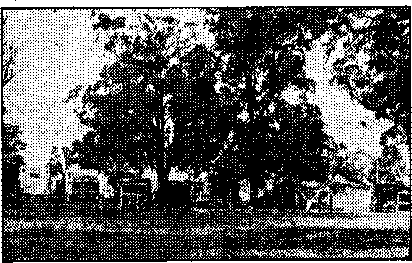
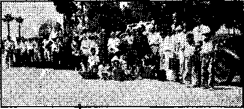
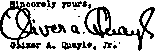

Contents
NBC Embarrassed with Questions
Pope and Emperor vs. Martin Luther
Bloodshed in the Name of Religion
Treasury Department—U. S. Government
Why Be Th consistent, Mr. Tholenf
Published every other Wednesday by
THE GOLDEN AGE PUBLISHING COMPANY, INC. 117 Adama St, Brooklyn, N. Y., U. S. A.
President Clayton J. Woodworth
Vice-President Nathan H. Knorr
Secretary and Treasurer Charles E. Wagner
Five Cents a Copy
$1 a year in the United States J 1.26 to Canada and all other countries
NOTICE TO SUBSCRIBERS
Remittances: For yoi^r own safety, remit by postal or express money order. When coin or currency is lost in the ordinary mails, there la no redress. Remittances from countries other than those named below may be made to the Brooklyn office, but only by International postal money order.
Receipt of a new or renewal subscription will be acknowledged only when requested. Notice of Expiration is sent with the journal one month before subscription expires. Please renew promptly to avoid loss of copies. Send change of address direct to us rather than to the post office. Your request should reach us at least two weeks before the date of issue with which It Is to take effect. Send your old as well as the new address. Copies will not be forwarded by the post office to your new address unless extra postage is provided by you.
Published also In Bohemian, Danish, Dutch, Finnish, French, German, Greek, Japanese, Norwegian, Polish, Portuguese. Spanish. Swedish Hungarian Ukrainian
OFFICES FOR OTHER COUNTRIES
England 34 Craven Terrace, London, W. 2
Canada 4G Irwin Avenue, Toronto 5. Ontario Australia 7 Beresford Road, Strathfleld, N.S.W. South Africa 623 Boston House, Cape Town
Entered as second-class matter at Brooklyn, N. Y., under the Act of March, 3, 1873.
2
Schoolboy Howler*
/ Julius Caesar was renowned for his £reat strength. He-threw a bridge _ y across the Rhine.
A grass widow is the wife of a dead vegetarian.
An optimist is a man who looks after your eyes, and a pessimist is a man who looks after your feet.-
A pedestrian is a man whose wife has taken the ear.
The Mediterranean and the Red sea are joined together by the Sewage Canal.
A zebra is a sort of cream-colored donkey with black stripes, from which they make stove polish.
Polities are a deadly form of insect life,
A spectre is a man who cheers a football team. ,
The Royal Mint is what the king puts oh his roast lamb.
A man who lives to be a hundred is called a centipede.
Joan of Arc was Noah’s wife.
A buttress is a female goat. ■
In 1620 the Pilgrim Fathers crossed th? ocean. This is known as the "Pilgrim’s Progress”.
A brunette is a young bear.
Courting disaster means to get engaged, A cataract is a eat that catches rats.
Celibacy is the name of a great man,
Pompeii was destroyed by an overflow of saliva from the Vatican.
A Christian is allowed to have only one wife. This is called monotony.
Henry Wadsworth Longfellow was born in America while his parents were traveling on the continent.
A census-taker is the man who goes from house to house increasing the population.
Up to Liza! ' 1
Rastus and Liza were married but a short time when he came home with a big washtub, a wash board and a three-foot mirror.
Liza—Whut’s al! de truck you brung?
Rastus—Not all, but yo’ kin take yo’ pick. Yo’ kin take de tuh an’ washboard an’ go to work, or yo’ kin take de mirror an’ set down an’ watch yo’se’f starve .—Lab or.
CONSOLATION
■ “And in His name shall the nations hope.”—Matthew 12:21, A. R. V.
1
Volume XX
Brooklyn, N. Y., Wednesday, January 25, 1939
Number 505
Jesuitized Albion. (In Two Parts—Part 1)
THE French police, when seeking to solve a particularly puzzling crime, proceed upon the assumption that there is somewhere, somehow, a woman involved, and that
if they can locate the woman they will be able to solve the mystery. Hence the phrase, "Find the woman,”
In international affairs, where the various factors that enter into a given situation are particularly mystifying, the presumption that somewhere in the background there is a Jesuit, or Jesuit influence, will often lead to surprising discoveries.
The influence of the Jesuit organization in the Roman Catholic system has long been recognized. The head of the Jesuit order is often referred to as the "Black Pope”. In his book While Peter Sleeps, E. Boyd Barrett, an exJesuit, shows how the Black Pope can and does dictate to the regular pope, who is, by way of distinction, referred to as the "White Pope”. .
The influence of the Jesuit system in England cannot be doubted, although its workings are hidden from the public eye. But straws show the way the wind is blowing in Albion. It is further in order to utilize these straws to find some solution to the “Munich Plot” which has so perplexed the observer of international trends.
At the outset it is of interest to reveal the Jesuit in the Cliveden woodpile, than which it is difficult to find a more imposing and voluminous woodpile in Britain.
The Cliveden Set
Considered one of the most influential groups in Britain, the Cliveden set is suspected of being pro-Nafi and of having forced favors to Hitler at the expense of Britain. The Cliveden set practically controls the British press. The set includes Lord Lothian, educated in a Jesuit
JANUARY 29, 1939 school, but ostensibly converted to Christian Science. He makes frequent visits to Hitler. Lord Londonderry, another member of the set, is a close friend of Goering. Major John Jaeob Astor, owner of the London Times, Geoffrey Dawson, its editor, and Barrington Ward, assistant editor, Sir Neville Ilefidcrson, ambassador to Berlin, Montagu Norman, head of the Bank of England, and Lord Halifax, the Foreign minister, are also identified with the set. Lady Astor, formerly Nancy Langhorne of Greenwood, Va., entertains the Cliveden set at her home every week-end, and it is there that most of their planning and plotting is done. Sir Stafford Cripps, of the Labor party, referring to the Cliveden set, stated, “People do not fancy the future of this country as does the gang of Lady Astor, as being that of a junior partner in a Fascist Internationale.” Lord and Lady Astor both deny that there is such a thing as the Cliveden set. That, however, is not significant. The Jesuits, and their pupils and sympathizers, are adepts at plain and fancy subterfuges.
Prosperity, as well as adversity, makes strange bedfellows, and the Jesuits are pleased to co-operate with anyone who will further their schemes for world-domination. One may be a “Christian Scientist” or "Anglo-Catholic” or what have you. That is of secondary consequence. The main requirement is a certain pliability and agreeableness with an eye to the main chance.
The “Fuehrer” ‘Principle'
The London Times has suggested that “the ‘Fuehrer’ principle (dictator idea) can exist within the framework of Parliamentary institutions”. That is just another way of telling England they will have a dictator one of these days. Chamberlain’s sympathies are undoubtedly in that .direction.
। i^_t -w His trip to Berchtesgaden is be-l^^A^jlieved to have been planned long ago by the folks that meet at the home of Lord and Lady Astor, al- — ii~W ready referred to. With reference to this, Robert Briffault, British scientist and author, in an address at St. Louis, remarked: Chamberlain’s spectacular flights to Germany .for conferences with Hitler were not the result of a sudden inspiration! It is known in diplomatic circles that the trips were planned weeks in advance and that an airplane was held in readiness for the prime minister. As a matter of fact, the first suggestion was that the king himself should ,go see Hitler.
The war tension that followed was terrific, but never once did the government heads expect to fight. The fear instilled in the people was deliberately planned. There were elaborate measures taken for protection from air raids, bomb shelters were dug in Hyde Park and sand was sprinkled in attics to prevent damage, in some unexplained manner, from Incendiary bombs.
The whole thing was planned to make the peace with the Fascist powers seem more sweet. It is strange how little people understand diplomacy and how greatly they can become stirred by war.
The Peace of Munich
By no means all Britishers arc satisfied with the “peace” that was won at Munich, The “appeasement” of Hitler seems to many to have been gained at the sacrifice of honor and principle. A few illustrations of the reaction of these are here given:
The Manchester Guardian, of September 23, observed editorially:
If Mr. Chamberlain now reads his papers he will see no trace of admiration tor his part as the head of a great democracy, no trust that he can save any shred of principle from the wreck, no belief even that he can recover his country's honor. England and France have known some humiliations in the last few yeans, but none so great, as this. Our name is mud in the United States and in the Dominions; the smaller European States have thrown up al! faith in the saving of the European order and are scrambling to declare their neutrality or to seek safety in agreement with Germany.
A statement by Messrs. Rcedman, Guenault, Sumner and Davis, of the University of Wit-watersrand, Johannesburg, South Africa, appearing in the October 14 issue of the same, said:
' There is more than a suspicion that the war scare was partly artificial and was used to avert the gaze of the democratic peoples from the. fundamental issues while the one remaining liberal State in Central Europe was reduced to impotence.
We do not believe that even at Munich the alternative to giving Hitler his full demands was war. Mr. Chamberlain went to Munich with two very good cards in his hand—the fear of war even in Germany (out of which Mr. Chamberlain made mueh political capital) and the unreadiness of the German High Command to lose another world war. Yet Mr. Chamberlain deliberately threw those two cards away. It is doubtful whether any group of politicians in history have had such a pernicious influence on European politics as the present so-called hitler British Cabinet. Each has been concerned with major events in recent years which have brought shame on the people of Britain: Sir John Simon and Manchuria, Sir Samuel Hoare and Abyssinia, Lord Halifax and Austria, and now Mr. Neville Chamberlain and Czechoslovakia. They have so long forsaken any guiding moral principle that they are apparently incapable of distinguishing between right and wrong.
The tears which Duff Cooper, First Lord of the Admiralty, shed in the House of Commons when he learned'of the ignominious peace dictated by Hitler at'Munich were not crocodile tears. He honestly believed that Britain’s surrender to Germany means the end of the British Commonwealth of Nations.
It is an odd circumstance that on the eve of the meeting of the four men at Munich to carve up Czechoslovakia the so-called,‘eternal light’ burning over the Tomb of the Unknown Soldier under the Arc de Triomphe, Paris, flickered and went out, and remained extinguished until the return of the premier.
Behind the Scenes
Ladislas Fara go, in Ken, November 3 (1938) issue, adduces reasons why he thinks that the September war scare was artificial, stating: that the Munich four-power conference was arranged in the private office of Montagu Norman, head of the Bank of England, four years before it occurred (and names those present); that in 1934 English armament firms placed huge advertisements in German papers offering for sale tanks and guns prohibited by the Versailles treaty; that Chamberlain has 833 shares of preferred stock in Imperial Chemical Industries, and 5,414 shares of ordinary stoek, while his son is on the sales staff at the main office in Birmingham; that in June, 1937, Norman had laid out the plan that Hitler was to annex Austria and dismember Czechoslovakia, with the subsequent return to Germany of some of her colonies;
that Blum’s government was overturned because he would not go along with this ultraFascist program, and, finally, that Runciman, , who was sent to Prague to becloud the issues, was himself the man who in 1934 authorized the first export of aero engines to Germany in open violation of the Versailles treaty. The article thus lays bare the fact that Britain is really Fascist, and indicates that Hitler has all along been staging theatricals for propaganda purposes, well knowing that he had nothing whatever to fear from the British Government, which takes its orders from the head of the Bank of England.
Further unfavorable reactions to the Chamberlain “appeasement” policy, so unpopular among liberty-loving Britishers, are registered abroad, particularly in the United States. Some of these follow.
♦ Drew Pearson and Robert S. Allen say interestingly, in the Philadelphia Record, British bankers had bet money on the demise of Czechoslovakia by advancing money to German industrialists, who in turn were working with certain big Czech hankers. These
Democracy goes to Munich
Czech bankers put the pressure on Benes, the British put the pressure on Chamberlain, and Hitler put .the pressure on both. The British bankers won. ....
Heywood Broun’s observations in the October issue of The Arbitrator are even more arresting
I think that in the next general election Neville Chamberlain should describe to the voters the nature of the day which might impel him to say “Enough is enough”. The suggestion is offered that while he might candidly admit that circumstances might make it necessary to cede England, Scotland and Wales for the s^ke of peace, he purposes to argue that London should remain as a free city in a canton setup. And if Hitler will not agree to that Sir Neville should insist on retaining the upper JANUARY 25, 1839 floor of 10 Downing Street as a private apartment so that there may be some spot which shall be forever. England. It’s a long way to Tipperary and a short hop to Berchtesgaden. Geneva is no more. The World Court is out of the picture and the League is dead. Instead there stands Adolph Hitler’s summer cottage, and to it the democratic leaders may go by appointment to ascertain the will and pleasure of Der Fuehrer,
The opinion of the New York World-Telegram’s special correspondent, John T. Flynn, is equally incisive. He says:
If anyone in this country now has the hardihood to raise his voice in support of the proposition that we should go to war to save the democracy of England, I assume that the proposal would be greeted with a horse laugh. What is at stake in England is not democracy, but her economic empire. What she is interested in protecting is that economic empire—those vast possessions which are, in fact, merely markets for her. What England saw threatened by a war was that empire. What she wants us to help her protect is that empire. To protect it she has destroyed the last home of republican government east of the Rhine.
■An ex-soldier, in the Toronto Star of October 8, lamented as follows:
Everything we thought we were fighting for in
the great war, freedom, justice, international honor and democracy, have been thrown on the junk pile. Czechoslovakia follows Ethiopia and China into bondage.
In Spain, short of sending British troops to assist the rebels, Mr. Chamberlain has done everything he possibly could to ensure a victory for Franco. He calls all this a policy of “appeasement”. To a good many people it looks more like the policy of making the world safe for Fascism.
A little more of the Chamberlain appeasement policy and this world will be turned into a Fascist . slave camp, which, after all, is, perhaps, what certain Britishers really want.—Ex-Private 160607.
Communism the Alternative?
A bitter paragraph appearing in Reynolds ■ 5
News of October 16 indicates how the Jesuit tactics of the Fascists are driving men to sympathy with Communism, accepting what to them seems to be less odious than hypocritical religion, and failing to see that God’s way is neither that of the religionists nor that of the Communist. The latter, in the estimation of such perplexed minds, appears to manifest qualities of candor and consistency which the Pharisaical religious systems lack. The item follows:
Russia has no aims menacing to Great Britain, breathes no' fire against Democracy anywhere. Under the gangster code of morals now governing international relations, there is no reason why Ministers of the Crown should be polite to her. And Russia has been guilty of two unforgivable crimes. She has succeeded in creating a form of Socialist economy over one-sixth of the globe; and while “democrat:c” stateBmen have been tearing up treaties and breaking their bonds, she has stood firm by her solemn obligations and the principle of Col-t lective Peace.
Many Britishers see clearly that the trend of British politics, so adroitly played, is in the direction of Fascist-Nazism and away from the democratic traditions and policies of the last few centuries. Nor are they blind to the fact that the tools of the Roman Hierarchy everywhere contribute their efforts to that end.1 .
In a speech in London U. S. Ambassador Kennedy showed his Roman Catholic training by saying it has long been a theory of his that dictator and democratic countries should get along together without emphasizing their differences and that there is no sense in letting these differences grow into unrelenting antagonisms. In other words, in his heart Kennedy is for Fascism and, as such, is not a fit man to represent a democratic country. He knows that Fascism hates and detests democracy; if he were on his job as a representative of America he would let the whole world know that America hates and detests Fascism even more.
Boake Carter called attention to the stageplay by Chamberlain and Daladier, that neither of these men expected war, and certainly neither Germany nor Italy expected war. German tourist agencies invited tourist travel, and a German naval cadet ship made a peaceful visit to Bermuda while the excitement was at its height, and the Italians never withdrew a single vessel from the trans-Atlantic service.
The United Press story from Rome is that Hitler intended to invade Czechoslovakia at .2:00 p.m., September 28, with 3,000 planes and 60 divisions of troops, but Mussolini was told by the British ambassador at 11: 30 of the same day that if the invasion occurred Britain would not remain neutral. Mussolini called Hitler at noon and arranged for the Munich conference and thus staved off the invasion and J. he world war which, allegedly, would have followed. ■■■
Money Flees
gTHTJ| While patting Chamberlain on
the back for the Munich “victory”, wealthy Britishers are not taking chances with their money, and are — ■“1 investing it elsewhere without waiting to see the results of the “appeasement” tactics.
Britain’s national debt as of March 31,1938, was £8,026,143,422, the same being the largest in its history. The public debt of the United States, as of June 30,1938, was also the largest in its history, standing at $37,165,000,000, or about $2,294,226,963 less than Britain’s. The population of Britain is only about one-third that of the United States; so the per capita debt there ^is much greater. Recent rearmament expenditures, in the greatest, maddest armament race in history, caused tremendous increases in both debts, but especially Britain’s.
A nation that is financially ham-V®\ a' stringed is not likely to be in posi- . tion to evade the toils of a system that has the experience and financial resources possessed by the Roman Hierarchy. That system appears to have made extraordinary progress during the period of the world’s perplexity. Aided and supported (or, let us say, aided and abetted) by the unscrupulous Jesuit organization, the Roman Hierarchy 'has an evil advantage that even the great British Empire appears powerless to resist.
The author, G. T. Garratt, in his Mussolini’s Roman Empire, at page 240, remarks apprehensively :
On most subjects the average Englishman is prepared to recognize the complete authority of the priest over his flock. Many, including the writer, would have sen ted any attempt to penalize Catholic orders in the manner that has occurred in France, and have looked upon the existence of Catholics in England as lending a variety and interest to our national life. During the last two
years they have found repeated cause to modify this view. If the priest comes down to the Marketplace as a politician, and from inexperience shows himself more reckless and bigoted than the ordinary laypian in public life, then common sense revolts at treating him as a privileged person.
If the pope takes sides on political questions about which many Englishmen feel deeply—as, for example, Italian aggression in Ethiopia and Spain —then again the English Protestant feels justified in examining the reasons which may have caused him to take this attitude, and will refuse to recognize such political pronouncements as being ex cathedra statements which any of his fallow countrymen should accept without question. If they accept as unquestionable, declarations condoning repeated breaches of treaties, of international law, , and of the ordinary rules of civilized warfare, then tile non-Catholie Englishman is entitled to ask whether Catholics any more than Communists are fit persons to be entrusted with the charge of English interests abroad. We find, on examination, that a large proportion of the Foreign Office are drawn from wealthy Catholic families, and that the general atmosphere is extremely friendly to Fascism.
Their [number of] supporters in each political camp gives them a voice in Parliament far greater than their numbers would justify. They have at their command immense wealth, for the Church has age-long experience in accumulating property.
Some of the lukewarm Protestants are also beginning to wake up, but they will have to protest a good deal more loudly, and with a better understanding of the Scriptures, before they merit “persecution for righteousness’ sake”, as do Jehovah’s witnesses in Germany and elsewhere.
John P. Maequeen, London, appears to be cutting his eyeteeth. In an address at the Synod of the Free Presbyterian Church at Inverness, Scotland, he observed:
The Press and the reporters are largely under the control of the Jesuits. In 1912 between 70 and 80 percent of the editors and newspaper reporters of Britain were not only Roman Catholic, but Irish Roman Catholics; and if they were that in 1912, what must they be now!
John’s clerical brethren, however, seem be slipping in the opposite JBbL direction, and John will do well to protest so loudly that they will excommunicate him — and he will stand a good chance of ‘laying up treasure in*heaven”. Prayers for the dead, the eastward posture in prayer, and crosses are now to be found in various churches of what was once Presbyterian Scotland.
Others, too, are becoming suspicious of the
JANUARY SB, 1939
Jesuitical manner in which Rome is gaining ground in England.
British Broadcasting Control
Sir John Reith, former director general of the British Broadcasting Company, resigned his £7,000-per-year job with that company to take a £10,000 job as chairman of Imperial Airways. His deputy, when he left the Broadcasting Company, was C. G, Graves, a Roman Catholic, and probably is his successor. The Protestant papers of Britain were filled with terror at this situation, the Protestant Reformation Society saying in its annual report:
Protestants have viewed with increasing alarm the increasing interpenetration of the British Broad- -easting Corporation by Roman Catholic influences in such key positions as deputy director and editor of the Radio Times.
He that sitteth in the heavens shall laugh, and moct when their fear coineth. (Psalm 2:4; Proverbs 1:26) When Jehovah’s witnesses tried to tell them these things in advance they were only scorned.
The American ambassador to London, who seems to be somewhat confused as to what are his duties as the representative of the American people at the Court of St. James’s, is lending a band. Said ambassador, Joseph P. Kennedy, whose sympathies with totalitarianism have already been referred to, at the behest of the British government, interposed in the production of a moving picture relating to the German-Czech crisis. He says all he did was to communicate with “a member of the Hays organization”. The name of the member is not mentioned, but since Jos. 1. Breen is a member of the Hays organization as welt as a subject of the Hierarchy, and since he is the main censor of moving pictures in the United States, mention of the name is not necessary. Suffice it to say that the picture was 'properly censored’ and Americans saw only what the Jesuitized section of Britain wanted them to see. Talk about Jesuit efficiency. Breen does the censoring, the "Hays organization” is "credited”!
These two instances are examples of the manner in which the Jesuits indirectly have sufficient control of radio and movies to further their ends. All that seems to be needful is a watchful eye. '
Censorship of the Press
The press still plays an important part in the business of keeping the public informed, '
. ■ 7
, and its prestige has been only slightly lessened by the advent of the movies and the radio. Hence censorship of the press is a vital matter with the Jesuits and their Fascist-Naai buddies. Note the following examples, observing that the Jesuit method does not always attain its ends at one bound. Sometimes those who should be subject to its demands appear to be working at cross purposes. But that outward appearance also serves a purpose. It confuses the public and covers the tracks of the conspirators against liberty.
Alfred Noyes, English poet and biographer, became a Roman Catholic eleven years ago, and three years ago published a life of Voltaire, widely praised at the time
by Catholics and even run as a serial in a Catholic paper, the Tablet. In May, 1938, the Italians running the camorra at Vatican City condemned the book and demanded its suppression and then Cardinal Hinsley, the principal Catholic authority in England, wrote to the London Times that he had read the book, admired it and could not speak of it too highly. Noyes got mad; and who can blame him ? He objects that the Italians who are trying to run his conscience and boss him around like a child give him no explanation of their condemnation and no date when they will explain their course, so he has sought another publisher and gone on wdth his book. The type of “freedom of the press” which Rome (and therefore the Jesuits) favors appears to have been defined by De Valera, prime minister of Eire (formerly a part of the British Empire) when he recommended “modified freedom of the press”. This “modified freedom” would, of course, mean no freedom at all; for everyth ing would be censored in advance; and don’t think for a minute the een-. sor would escape Jesuit control.
The Blasphemy Bill
T. E. Harvey, Independent, English Universities, is hereby awarded the title of “Free Speech Harvey” for his courageous and intelligent resistance to the so-called “Blasphemy Aet” before the British House of Commons in the summer of 1938. He reminded the members that Christ was for free speech, He was against the attempt to root out the tares from among the wheat; he told them that the early Christians were regarded as enemies of mankind, and having, in the actual language of ■ the proposed act, “activities calculated to interfere with the established religious institutions of the country?’ He reminded his hearers that truth is its own best weapon and he did not think the House of Commons added any to its glory the day when, 300 years ago, a Puritan House condemned a Quaker for blasphemy, branded his forehead and bored his tongue ■with a red-hot iron. lie wished that the British House of Commons should stand by the principles of John Milton: “Give me the liberty to know, to utter and to argue freely according to conscience.” His address was roundly applauded.
The Glasgow Herald and Catholic Observer reported joint Catholic approval of the bill which Mr. Harvey so effectively opposed.
In due time it could be called blasphemy to refer to facts such as the following: In the first four months of 1938 there were no fewer than 37 crooked clergymen under the surveillance of the London police. They make most of their money by swindling women, collecting money for bogus missions of one kind or another.
Concessions to Rome
.* The pope, for the first time since
the fifteenth century, has a personal representative in England who VXjgjFl has direct access to tfie foreign of-fee, a definite concession already largely Catholic. The new so-called “Apostolic Delegate” is Monsignor William Godfrey, formerly rector of the English College in Rome.
The sending of an “apostolic delegate” to a country not having diplomatic relations with the Vatican may be considered by some to be a piece of Papal effrontery. It is a little of that, and also somewhat of a deception. Actually an apostolic delegate has nothing to do with the country to which he is sent, but is merely a representative from the pope to the Catholic church in that country. Undoubtedly the delegate makes use of his position to do what he can toward influencing political developments so as to be favorable to the Hierarchy. This business of sending delegates and diplomatic representatives is an aping of earthly governments, at which monkey-business the Hierarchy has always been an adept.
The presence of an apostolic delegate also serves to put a check on ecclesiastical personages inclined to exercise a Little'too much liberty. Hinsley may need a little supervision, as his approval of Noyes’ book indicates.
(To be continued)
'RIGHTEOUS
♦ As an illustration of what can be done by a heart desirous to do something to the praise Of Jehovah’s name, take a look at this trailer. Merwin Boen, who operates this combination in the Ozark mountains of southwestern Missouri, says by way of explanation:
.1 am a young man not fortunate enough to have a ear for the service, so I use a bicycle, and thus carry on. Territory for witnessing became scarce in the county where I usually witness, so I built this trailer for my bicycle and go long distances from home, camping sometimes for many days at a stretch.
Bicycle trailer in the Ozarks
covered considerably
♦ I am an Australian pioneer, and work alone, using only a push-bike in my work. By that means T have more than 10.000 miles. My method is to go to a main town on my assignment of territory, rent a room, or stay with friends, and from there work all the territory for 40 or 50 or sometimes for 100 miles around.
The phonograph I carry on my back ; the literature, 40 books and 100 booklets, on racks; my towel, soap, shaving kit, a clean collar and a pound of dates are in a leather bag. This equipment usually lasts me ten days, but I keep going until all the literature is placed or until I run out of territory, when I return to my room and load up for another trip. I stay wherever night overtakes me, eat where I can, and in all my travels in the Australian bush I have never yet beeji without a meal or a bed, though sometimes I have had to keep witnessing until 9 : 00 or 10 : 00 at night that if rained on would not be passable for a week or more, and as rain was working Up"! left Barrington station at sundown to follow an 18-mile mail route to where I could pick up a good road. All I had to follow was a horse track used once a week.
before someone would be kind enough to give do all this, and travel through this rough me a shakedown. country, and get lost, to bring this message
One cold winter night in Queensland it was to me, there must be something in it worth necessary for me to get over some bad country while.” He made me a meal and put me to
JANUARY 25. 1938 g
After an hour's walking it got dark, and in the hills, with heavy timber about, the night was black as pitch, and it was not long before I was off the route altogether and was plain bl’shed. When I realized this fact 1 was at a creek with a steep bank on either side and a small trickle of water in the bottom. I knew this was not the track, because a horseman would not cross at such a point.
It was like this for a mile on either side. After I had tried every method of busheraft
that 1 knew, to pick ' up the track, I finally found a place where I could cross, and set off in the direction that I thought was the right way. After walking an hour I came to a fence with a gate in it. I went through it; still no tracks. The gate had not been used for weeks. I went on in the same direction and, after another
hour, came to another fence; right at the gate each time, and still no track.
This time f stopped, lit a fire at my bike, so I could find it again, walked to the top of the nearest hill, and was pound; for there, down in the valley, was a tiny light shining, and when t let out a cooee the dogs began to bark. It was not long before I was knocking at the door, at 1:30 a.m.
What a surprise that chap got to see me at his door! After a short conversation as to where I had come from, where I was going, and why I was out so late, he asked me what I was doing, and I let him read my testimony card. He then said, “Judge llutherford! I often hear him on the radio, and would very much like to get some of his books. Where , can I get them ?” I laid them on his table, and he said, “Well, if a young man like you will bed in his spare room. In the morning I left twd Bibles and took his order for the full set of 16 bound books, which I sent him when I got back home. Such things have happened many times. Through it all God’s name is extolled and a good witness is given.
Trailer camp at Sydney convention
I have had marvelous experiences with the phonograph. After listening to the record ‘Why the clergy oppose the truth’ one woman said, ‘'Now I know why our parson warns us not to have anything to do with Judge Rutherford’s books.” In one instance, on request, I played records at a telephone exchange so that all subscribers on the line might hear, and one of them telephoned in an order for books.
At present I am tied up with rain in a country where the soil is black mud and when it rains everything sticks like wet dough. But I am not idle. I chance to be at a sheep-shearing camp, quartered with forty men. Every night I play .records for the men, and though some are goats there are enough sheep to make the goats keep still, so they ean listen to the message of the great King whose name we delight to honor.—H. A. Bell, Australia.
In the Turks and Caicos Islands
4/0 ne of Jehovah’s witnesses recently visited the Turks and Caicos islands, 450 miles northeast of Jamaica, bringing there, for the first time, the message that Jehovah’s kingdom has come. Though the witness is a British-subject, and had every right to make the trip, and tr was well supplied with funds and complete identification papers, every possible obstacle was put in his way, to prevent his landing (after a seven-day trip in a sailing vessel).
The influence of the Anglican and Methodfat clergy was used to try to keep the people in darkness.
After all the illegal activities of the harbor master and immigration commissioner in behalf of the clergy had been overcome (at some considerable expense for cablegrams), the clergy then went among the people to still try to prevent, if possible, any truth’s leaking out as to their fraudulent racket. But they did not succeed. They even tqld them that if they dared obtain any of the literature they would come to their homes, collect it and burn it. ,
Every home was visited, 450 bound books, 22 Bibles, 1,700 booklets, 1 Watchtower and 2 Consolation subscriptions were placed, and three small companies were organized. The message was presented by phonograph. One woman, when she heard the truth for the first time, exclaimed, with tears flowing down her face, “Today is salvation come into my house." Another said, “It is God that sent you here; for we are in darkness,” Another: “This is the true message of God, and we never heard it before.” During a study meeting one young man wept aloud, saying, “What have I done, to merit such favor from Jehovah?”—C. R.
Launy, Jamaica, '
♦ Proving that the Devil is an unmitigated liar, one of the policemen at the Seattle convention of Jehovah’s witnesses was heard to say to another, “If they were all as orderly as this crowd, we might just as well go hom,> and go to bed.”
♦ Just a year ago I received my sound-car equipment No. 3 and helped to have it installed. There is an ordinance here in this city against sound cars; so I tvent to the mayor and gave him witness and explained the work of the sound car. He took some books and told me to go right on, as it’s a splendid work. So I told him of trouble in other cities, and why. He said, “Go right on; and if you have any trouble, come and see me.” Also went to the chief of police, and he was favorable and nice, too. He tool^ the book Riches,
The first evening out with the lectures, after all was over and I was two blocks away, police drove up with flashlights and said, “No more of this or we will take you in.” So I told them what the mayor had said, and the chief of police; but they said, “If you put it on again
we will take you to jail/’ So I said, “You won’t need to take me; come and go down with me now.” They said no. So I went down, and the night lieutenant said, “I told these fellows to let you alone.” So I said, “Well, then, I’ll go right on,” and did so, on the street in front of the post office, where there are numbers of men loafing. Went there many evenings, placing over 200 pieces of literature.
All went well until in my own driveway three weeks later. I put on lectures for about fifteen guests, when up came motorcycle cops (I was already all through with the lectures). They said, “You can’t do this.” I asked why. They said, “You had it too loud.” I asked, “Did you hear it?” They said no, but had a complaint.
Asked who made the complaint, they said they did not know, but it was a white house six doors down. And you can guess who lived there —“the Christian preacher.” I told the cops what the mayor had said, and the chief. They asked if I had it in writing; and if not, I’d better have it, so they would not have to take me in. This was on Sunday afternoon. So on Monday, at 8 a.m., I was in the mayor’s office, waiting till 9 a.m. to see him. I told him what had happened. He said, “I guess you’d better bring this before the city council meeting on Thursday. So I did; and after explaining the work to the council the mayor made a motion that this work be continued, preaching the Gospel by sound car, and not be hindered. The streets commissioner seconded the motion (as I had also gone to him before and he took Riches, when I wa^ working in the business district; he said his wife spent the holiday reading it). Motion carried—only one objection ; guess his religion. So the Devil’s bluff did not work; and here we are out every day and evening with the sound ear, and with marvelous experiences— too many to relate, but we thought you would like to know a city ordinance against sound cars does not stop the message by sound car in some places.—Martha Holmes, Iowa.
For Free Speech
♦ Repercussions of Judge Rutherford’s address “Fascism or Freedom”, broadcast by radio station WBBR on October 2, have been plentiful and varied. Letters received by the radio office have been numerous, with opinions forcefully expressed pro and con. Consolation here reproduces one of these letters, chosen
JANUARY 25, 1939
1
as most representative of the American ideology of freedom of speech.
203 E. 14th Street New York City ‘ Oct. 2, 1938.
Radio station WBBR Brooklyn, New York. Gentlemen:
I wish to congratulate you for the broadcasting of the Watchtower program.
Altho I do not believe in Jehovah or any one of the other gods offered to us by the hundreds of existing religions, I do believe in freedom of creeds; freedom of thought; freedom of speech; freedom of the press; freedom of the radio; freedom of assembly and freedom of self-determination.
I have noticed from personal observation that the Catholic Hierarchy in the E.E.U.U. is carrying on today the most vicious campaign against all the above rights guaranteed to all our citizens irrespective of creed, color or religion.
Unfortunately it is tru^ that the Catholic Church in America is bending all efforts to mix itself in national politics and is making perilous inroads into the educational institutions and is trying to establish in America the same old policy of uniting the church and the state, which has proved a thousand times to be against the best interest of the state and of the people as a whole.
Only by chance I heard this program, and I like it so much that I’m going to buy a brand-new radio so as to have better reception next time your program is on the air.
I extend my congratulations to the courageous citizen who spoke from the Watchtower program. Please send me a copy of his address.
Very truly yours,
[Signed] Joseph V. Rogers.
Limitation of space prohibits the publication of other equally interesting expressions from citizens who still recognize their American rights of free speech and believe in them.
Jehovah’s Kingdom publishers (Spanish and English) at Harlingen, Texas (To be continued)
11
IN EUROPE the dictators barefacedly glory in the removal of fundamental rights of freedom of speech, press and worship. They have been so .bold and so brazen in their denial of the people’s liberties that it has aroused a spirit of revulsion and protest throughout the entire United States. In America it is not popular to publicly expound a belief in the destruction of freedom of speech or press. The big business representatives and the prominent religionists all publicly state their devotion to the liberties of the people, but their actions are quite different from their public utterances.
The National Broadcasting Company likes to glorify itself and parade before the people as an organization upholding the fundamental principles of freedom of the air. Its president, Lenox Riley Lohr, went to Buffalo recently and delivered an address before an outfit designated the Federal Council of the Churches of Christ in America. He expounded to them some excellent and beautiful phrases on freedom of the air, telling them the policy of the National Broadcasting Company is to give the greatest .freedom even for controversial subjects. The following paragraphs are quoted from Press reports of his address:
Freedom of the air does not give every citizen the right to express his opinion over the radio— there are not hours enough in the day to allow that. It is a freedom to broadcast a eentroversial subject. By controversial subject I mean that on which a substantial group of citizens—large in number and important in influence—has a different opinion from another substantial group of citizens, and on the outcome of their discussion a third substantial group would be affected. The Supreme Court reorganization plan was such a subject.
This is NBC’s policy. On any controversial subject we will give equal opportunity without charge to both sides to express their attitude before the public. There must be speakers of equal consequence, equal in number, speaking at equally desirable times on an equal number of stations. Of course, that cannot be achieved absolutely. But that is the standard, and we try to follow it as closely as possible.
NBC Embarrassed with Questions
In the meantime, however, sonife interesting letters were being sent back and forth between A. L. Ashby, vice-president and general counsel of the National Broadcasting Company, and Judge Rutherford. This correspondence proves the action and policy of the NBC toward Judge Rutherford’s lectures and the Watch Tower programs to be vastly different from the public utterances of the corporation’s president.
For many years the company has declined to broadcast Judge Rutherford’s lectures. The public reason given by them is that the lectures are controversial and that Judge Rutherford “attacks other religions”. The real reason, however, is different. The fact is that the foreign power known as the Roman Catholic Hierarchy has taken upon itself to censor apd interdict Judge Rutherford’s lectures. Hierarchy subjects have brought pres- • sure and have intimated to the broadcasting corporation that if it does present such lectures, even though they be true, it would be just too bad for the corporation: it would lose Catholic trade and suffer greatly financially.
Consolation presents herewith some of this recent correspondence.
Letter No. 1 is an epistle of Vice-President Ashby to Judge Rutherford.
Letter No. 2 is Judge Rutherford's answer.
No. 3 is what Mr, Ashby hopes closes the matter.
[Letter No. 1]’
National Broadcasting Company, Inc.
RCA Building - Radio City New York, N. Y.
L. Ashby
Vice President and
General Counsel
November 10, 1938.
Mr. Joseph F. Rutherford, 124 Columbia Heights, Brooklyn, N.Y.
Dear Sir:
Several times during the past few months Mr. Sidney Weiss of the Acorn Agency applied to us on your behalf to sell time to broadcast your religious speeches or to take the programs on a sustaining basis. You cannot be unaware of the reasons we gave for declining to. broadcast those, programs, yet in your letter of-October 31st you ask why we refuse to broadcast what you characterized as truths about certain religious and political organizations.
We repeat what undoubtedly you already know. The National Broadcasting Company does not sell
time to anyone to discuss religious matters and it will not permit its facilities to-be used upon any basis to attack or reflect upon any religious faith pr denomination. No deviation from that rule will be countenanced. Concretely applied, this means that our facilities are not open to others to attack your religious philosophies or principles and by the same token they are not available to you to attack religious organizations with which you are not in sympathy.
Faithfully yours,
[Signed] A. L. Ashby.
[Letter No. 2]
November 26, 1938 National Broadcasting Company, Ine.
A. L. Ashby, Vice President RCA Building, Radio City New York,’N.Y.
Dear Sir:
This is to acknowledge yours of the 16th. You entirely sidestep the issue, Mr, Weiss of the Acorn Agency made application for your facilities for me to address the public on the subject of “Fascism or Freedom”, There was nothing religious about it. You state that your facilities are “not open to others to attack your religious philosophies or principles”. Permit me to say, my dear sir, that I have no religious philosophies or principles. I am not a religionist. I am a Christian who bases his conclusions entirely upon the Word of Almighty God. As to my speech on “Fascism or Freedom”, it’ set forth the indisputable evidence that the Roman Catholic Hierarchy, operated ■ from Vatican City and which is inimical to the American principles of government, is carrying forward a campaign in America to turn the nation over to the Fascists, You decline to permit the people to have these truths broadcast. That is not religious, but it is an organization acting under a religious name to accomplish a wrongful political purpose.
Will you be so kind, my dear sir, as to answer the following questions:
1. Are the facilities of the National Broadcasting Company, Ine., open to use for the purpose of informing the American people against an enemy of American principles, regardless of the name of the enemy!
2. Does the fact tjiat an organization operates under a religious name afford for such an organization a complete shield from being exposed by your facilities as to action that is against the fundamental principles of the American government!
3. Is it your purpose to shield and protect any and all organizations by denying the use of your facilities to expose them, which organizations operate under a religious name and cloak!
4. Are all organizations operating under a religious name immune from public exposure by the JANUARY 86, 193S ■ facilities of your corporation when that exposure is based upon absolute and provable facts!
I will thank you very kindly to let me have your answers to these questions.
' Very sincerely,
[Signed] J. F. Rutherfobd,
[Letter No. 3] :
December 5, 1938 Mr. J. F. Rutherford, 124 Columbia Heights, Brooklyn, N.Y.
Dear Sir:
We have patiently endeavored to fully and fairly acquaint you and your representatives with our broadcasting policies. Tn view of this, you have all the information necessary to answer the questions contained in your letter of November 26th.
Faithfully yours,
[Signed] A. L, Ashby,
Why Ashby Stands Mute
It would seem that any person having due regard for his honor and integrity, and having any consideration for American principles of liberty, would have been glad to answer the questions propounded by Judge Rutherford. But the officers of the National Broadcasting Company readily see that these questions are too ticklish for them to handle.
Take, for instance, question No. 1, which is as follows:
“Are the facilities of the National Broadcasting Company, Inc., open to use for the purpose of informing the American people against an enemy of American principles, regardless of the name of the enemy,
In line with the public utterance of President Lohr, this question ought to be answered “Yes”. But a “Yes” answer comes into conflict with their concealed policy of subservience to the Catholic Hierarchy’s dictum. To comply with the Hierarchy’s demands they would have to answer “No”, and that would be exceedingly embarrassing because it would expose their cringing to the demands of an enemy of American principles. Of course, it would not -do for them to publicly admit that an organization operating under a religious name is completely shielded by them from exposure as to action against fundamental principles of the American form of government. Therefore, in line with their public policy, it would be necessary f»r them to answer question No. 2 “Np”. But this would likewise involve them in conflict with the organization operating under a religious name and to which they have prostrated themselves. It wouldn’t do to answer it “Yes”, and they are afraid to answer it “No”. Therefore they become as one blind and dumb.
The same reasoning applies to questions No. 3 and No. 4. It would not do to admit that organizations operating under a religious name are immune from public exposure through their facilities. They cannot publicly admit that it is their purpose to shield and protect such organizations through denial of NBC broadcasting facilities. At the same time they dare not publicly state that NBC facilities are open to expose such organizations operating under a religious naqie and cloak. The Hierarchy says “No, no”, and the NBC obsequiously complies with the Hierarchy’s bidding.
Thus you have the picture of the National Broadcasting Company, On the'outside it appears pure and undefiled. Its public utterances hold it forth as one loyal to American principles of freedom. Its actual policy, however,
National Broadcasting Comvavy, Inc.

is that of toadyish flunkyism to the greatest enemy of the eri can people. It acknowledges money as its god and the Roman Catholic Hierarchy as its censor, dictator and boss.
"Even so ye also outwardly appear righteous unto men, but within ye are full of hypocrisy and iniquity.”—Matthew 23; 28. »
—0. R. Moyle.
Reflections on Hypocrisy
The contribution just preceding covers al! the ground, and covers it well, but a few reflections on the art of public hypocrisy, now one of the greatest and most shameless industries or occupations of earth, may be in order.
In previous generations it was considered unfortunate if a man in public life showed no evidences of manhood, no ability to face the facts, no courage. But those days have largely passed, and things in trousers parade as men that their forefathers would be ashamed to own as such.
A case in Germany comes to mind.
Prior to the Munich triumph of German arrogance, the Protestant (Confessional) churches of Germany had agreed to offer the following public prayer:
Lord God, we confess our sins and the sins of our people before Thee. May God forgive us and avert His wrath. But if, according to His inscrutable decision, He punish us with war, we shall seek comfort .in His promise of salvation.
To be sure, that is a silly prayer, because
Kutonal BsouwAmnso ('OMTAjrr, Inc.
8mnl tim* WK PM* f•» It, 814W Wall I of ItM Actors lyaaoy appllod to Uf on yw bahalf to mU tiiM to yffur rallclouf apotchaa &r to
fi-i* jTQgrm on * riutaLnla^ bsalli Tou cannot b* uM.oar* Of lb* mj*oh* n for doollnim to brOadC41t Ubm pro-gy*aj, F*t in ytnr lattor of Qetobar Jlst you tfk •* Ttftii to hroMcart you eharantaria*! al trvthi about MrUifl rollfiou* political orpMaatioai.
Va rapBAt urrinubtadly JWl alra*4F kao*. Th* ■atin ml Broad bob ting Ccapal^ do** not *all tla* to uyM* to diaciuo rallgloua aattari ud It will bot p*r*lt it* fanlliti** t<J ba uaed upon *»7 ba*i* to atUck w rrflaCt upon my r«llgl£ua faith OF dAmlaatlon* Jo drriatiOQ ywij alii b* eotmtananMd. CoMTotaly appliedt thi* WU (Jut our fadilltik* kF* not Opafl to othara to attack yuur raUglou* philoiophfaa or ja-LOCfplsa and by the w tokatt art not aTailabl* to to attack roHclou* W“ ja&LxalltiiJa With ahloh yOU afa oat la ■j*patbjr.
Hr, J. I. Batharfor*, l±4. Colaabia Ualghta^ femtlya, <■ t»
oiri
Ta Uii paUaatly ■*Tta*r>ar to fully *q| fairly icquaint you an* yw rapranEtitlnB vita a® brQMt*a*UA| pailclafi Ln vlar af thlJ, yts hava all th* information wta^Sary to Ibjv*T Iha ^arucitM •oauimk u ivtuv ar n—sMfe
faithfully JTCTI,
Behold the valor! Behold the virtue! Behold the veracity!
it dishonors Almighty God and makes. Him the author of wars and all other he devilment afflicting mankind; hut it was not because of this that the Nazi Government objected to it. Three bishops, Mahrarens, Wurm and Meiser, were dragged before the Nazi minister of Church Affairs and were told that the proposed prayer was treason to the German state; and they were saps enough, and cowards enough, to sign a declaration against the prayer, under threat of being confined in a concentration camp.
But America need not boast. Manhood in the United States is down to the German level; and that means that in this country, too, are many in high positions that are beneath contempt. What is more unmanly than public professions of courage and fairness and honesty in the public interest, and private acknowledgment, by silence or otherwise, that none of their public statements are to be believed?
Many of the readers of Consolation suspected long ago that the management of the National Broadcasting Company is hypocritical, cowardly and unfair, and is, at heart, a traitor to American interests. So, because it is a matter of interest, readers will be amused to see the cuts shown herewith. Compare the signature to the letter of November 16 with the one to that of December 5.
Those three German bishops, Mahrarens, Wurm and Meiser, should haste to chuck their jobs, and get out of Germany if they can, and while they can, and should apply to the National Broadcasting Company for jobs. They would make ‘courageous and intelligent additions’ to its present staff.
About 155,000,000 acres of public land have been granted to railroads and actually passed into railroad possession, This equals 242,000 square miles; four times the area of New England, more than the combined area of France, Belgium and the Netherlands, not quite twice the area of the British Isles.
To build the Northern Pacific, the American people invested 41,875,924 acres, or 65,431 square miles; about the area of the states of New York, Vermont and New Hampshire.
To build the Union Pacific and Central Pacific, the American people invested, besides bonds and cash, 29,533,922 acres, or 46,131 square miles; about the area of the states of Pennsylvania and Delaware.
To build the Santa Fe, the American people invested 19,406,740 acres, or 30,323 square miles; about the area of the state of South Carolina.
To build the Southern Pacific, the American people invested 10,807,786 acres, or 16,887 square miles; not much less than the area of the states of Maryland and New Jersey.
The investment of public lands in other railroads were heavy enough to astound Europe. Thus the Texas Pacific got 11,280 square miles; about the area of Belgium. The International-Great Northern got 10,050 square miles
JANUARY ZE, 1939
—a quarter the area of Ohio. The Missouri-Kansas-Texas, better known as the “Katy”, drew a prize of 4,888 square miles—-a little more than Massachusetts. Even when dealing with lines not generally reckoned as land grant railroads, the public investment of acres is huge. One may get a grip on it in this way.
The State of Connecticut contains 3,084,800 acres. But the American people, through state and national governments, granted 3,816,785 acres to the roads now included in the Seaboard Air Line; 3,766,994 acres to the roads now included in the Louisville & Nashville; 3,760,980 acres to the roads now included in the Illinois Central ; 3,631,177 acres to the roads now included in the Chicago, St. Paul, Minneapolis & Omaha; 3,402,885 acres to the roads now included in the Burlington; 3,236,720 to the roads now included in the Great Northern, and 3,113,146 acres to the roads now included in the Chicago & Northwestern.
All told, as previously stated, the government of the U. S. and those of the states presented the railroad promoters with 150,000,000 acres of land, including timber and mineral resources; and figuring only $10 per acre, that represents the generous gift of $15,000,000,000, or considerably more than the present net value of all the railroads of the United States!—Oscar Ameringer, in The American Guardian.
~ 15
Humans that betray their parents, friends and benefactors could learn something from the Birmingham, Alabama, dog that, when the house caught fire during the night, deserted her six puppies, then only three weeks old, that she might arouse the household and so bring about the rescue of the two boys and one girl of the home that are her constant companions. As a result of her faithfulness all hands were rescued, including the six puppies. Once is a great while, in this world, something works out all right.
You kidnap my children, steal my milk, kill me, eat me, and then strut around in my hide
The Poultroeutor ♦ The poultroeutor, invented by a Massachusetts man, electrocutes poultry intended for the market. The feathers do not set, and are more easily removed. When the bulk of them have been taken off, clean hot wax is allowed to cool on {he body, and when the wax is pulled off in a single motion all the pin feathers are swept clean. It is claimed by the inventor that the use of this unscriptural strangulation method cuts the cost of poultry raising by one-fourth.
Giving the Beavers a Tip .
♦ Giving the beavers a tip on where to build their dams COG workers in Idaho build temporary dams to give the beavers a start and then turn loose about twenty trained beavers, which go ahead and finish the job in ten days. At present the government is using some 800 beavers in Idaho alone, and it is calculated that each one of these busy little workers does about $300 worth of work a year in preventing soil erosion and improving watering facilities and forage crop conditions on Federal
grazing lands. It costs about $5 to catch and train a beaver. :
♦ The World War led to a great increase in the number of the blind, and a great increase in the number of dogs trained to lead them about. A dog so trained guides his master safely even where it is dangerous for those who have full use of their eyes, is disobedient when necessary, looks after handkerchiefs and purses accidentally dropped, leads his master around overhead obstructions and side obstructions and picks out the safest and best place for him to sit when in a restaurant.
♦ Buddy, first of the Seeing Eye dogs of «America, is dead, at 11| years, anil her owner, Mbrr is S. Frank, blinded in a boxing match in his youth, feels blind again. Buddy saved his life once in Chicago when she dug her claws into a hotel carpet and refused to budge. This prevented her owner from walking into an open elevator shaft and falling fourteen stories. Someone had left the shaft door open. The other day, in New'York, a man who sees walked into such a shaft and fell fourteen floors. He caught the cable, and is alive, but terribly crippled land maimed.
♦ Some of the things made from casein, after the milk is processed in the creameries, and this valuable residue is left, are synthetic marble, billiard balls, buttons, coating for shiny paper, paint, celluloid, dishes, transparent wrappings, glue, imitation jade and amber jewelry and coatings for leather and linoleum. All these things you eat when you eat cheese.
DURING the year (1938) the Indian Science Congress held its assembly at Calcutta. In that Congress a professor of Edinburgh University made this statement: “Nothing in brain surgery supports the religious belief that the soul [some invisible something] leaves the body at the moment of death.” That statement is absolutely true, and undoubtedly many scientists will say that the professor mentioned and other scientists are entitled to credit for this “wonderful* discovery”. It is one of the weaknesses of man to attribute to human wisdom that which belongs alone to the Almighty God.
Had the scientists accepted and believed the Bible to be the Word of Jehovah God they would have reached that conclusion long ago, that the soul does not leave the body at death. Had the religionists believed the Bible they would never have advanced the theory that the soul is some invisible thing that leaves the body at the moment of death. When men rejy upon human wisdom they always get themselves into trouble. Jehovah God provided the Bible for the instruction of man in the right and true way. In the Bible is the plain statement that man is a soul and does not possess a soul separate from the body. The organism, or body, together with the breath that living creatures breathe constitutes the soul. The breath of life is taken into the lungs and sets in motion the circulation of the blood, and the heart sends the blood throughout the body and sustains life; as it is written: “The I ife of the flesh is in the blood.” (Genesis 9:4; Leviticus 17:11) The manner of producing a soul is plainly stated by the Lord in His Word, as follows: “And the Lord God formed man of the dust of the ground, and breathed into his nostrils the breath of life; and man became a living soul.” (Genesis 2:7) The soul is the creature that moves and breathes, and through the arteries and veins of that
JANUARY 25. 1931
soul the blood courses, keeping the creature alive. If the breath is taken away the circulation of the blood stops and the soul is dead.
Every living breathing creature is a soul. Therefore the word “soul” is not confined merely to man. The Word of God declares that every beast of the field is a soul. (Numbers 31: 28) Furthermore, it is written that a soul eats food. God said to his people, “No soul of you shall eat blood.” (Leviticus 17:12) “Whosoever eateth [blood] shall be cut off.” (Leviticus 17:14) Thus it is seen that the word “soul” and man are synonymous terms.
Jehovah God caused one of His prophets to write, “The spirit [invisible power] of God hath made me, and the breath of the Almighty hath given me life.” (Job 33:4) It is God who created man and gave him life, thus making man a soul, and when that soul or man deliberately sins the penalty prescribed by Jehovah is death, as it is written: “The soul that sinneth, it shall die.” (Ezekiel 18:4) “What man is he that liveth, and shall not see death? shall he deliver his soul from the hand of the grave ?”—Psalm 89:48. '
Many centuries ago the great liar of the universe, Satan, the Devil, declared, “There is no death,’ and this he did in order to contradict God and reproach His name and deny His Word. Then Satan brought in religion for the purpose of mocking God, and Satan induced the religious teachers to announce that the soul is immortal and eannot die, which is also a flat contradiction of God’s Word. Religionists fell into Satan’s snare, and hence for centuries have taught the people that the soul is some invisible thing that exists and is separate from the body and leaves the body at death. Now the scientists discover that the . religionists are wrong. For many centuries Jehovah God has been telling all who desire to know the truth that the religionists are wrong and have been led into the wrong way by the influence of the Devil. Thus it is seen that religion is a snare which Satan has set in which to catch men and hold them away from God; and God plainly told the Israelites that religion would constitute a snare for them. (Deuteronomy 7:16, 25) What the people need to do is to shun religion and devote themselves to the careful study of the Bible and follow its teachings. Doing so, they will be free from error and will avoid many pitfalls. The only true wisdom concerning man is to be found in the Bible.
> 17
I AM advised that the Junior College at Iola, Kansas, at an assembly in the latter part of November, 1938, to which high-school students were invited, was addressed by a Catholic clergyman who calls himself “Father Ai eken”. It is presumed the purpose of the assembly was to aid young American students. The clergyman delivered himself of a diatribe which clearly puts him in the class named by Jesus in John 8: 44 when He said of clergymen of His day, “Ye are of your father the devil, and the lusts of your father ye will do. He was a murderer from the beginning, and abode not in the truth." Personally, this modern Ananias is of no importance, but his attempt to fill young Americans with numerous lies to their injury and to the injury of other people warrants a reply, He took occasion to attack me personally without any reason whatsoever, and not one of his accusations, except my place of birth, is true. The people are not interested in my personal career, but they are interested in the work in which I have been engaged for more than a quarter of a century, namely, proclaiming to them God’s Word of truth, particularly concerning His king-1 dom, which is the only hope of the world.
The afore-mentioned Aicken denounced me as a Communist, well knowing that his statement was ■without a semblance of truth. In all my books, which are in the hands of the people to upward of 270,000,000 copies and in 78 different languages, there is not one wrnrd to be found in support of Communism. I am not a politician, I am a Christian. His attack on my career as a lawyer is vi-t cions and without a semblance of truth.
I dare say that my record as a lawyer is cleaner than his record as a pretended preacher of the gospel. He charges that I permitted my mother to die in the county poorhouse, and to this hundreds of people w’ho knew her personally wmuld testify that such is a vicious and malicious lie. She was never inside of a poorhouse at any time. '
. He charges that I interfered with the army and navy and -for that was sent to prison, which is also a fie. Briefly the facts are these: Together with others I was proclaiming the truth concerning God’s kingdom and the truth exposed particularly the nefarious work of the Roman Catholic Hierarchy. A number of such clergymen held a conference at Philadelphia and formed a conspiracy to have me railroaded into prison. Together with others I was arrested and put through a mock trial during the excitement of the war, sentenced to eighty years in prison, and, by the political Catholic judge, denied bail. My ease was taken to the Supreme Court of the United States, where bail was quickly granted. The ease was heard on appeal in the Appellate Court, the Court reversed the judgment, and the Government voluntarily dismissed the case. My incarceration was wholly unlawful and the result of a wicked conspiracy of the clergy. On being released I went to every large city in the United States, advertised the facts and exposed the clergymen, and not one of them has had the courage to answer. Their only response is malicious abuse.
Aicken charges that I *am very wealthy, grown so by bookselling. I have never sold a single book that I wrote. I have copyrighted the same and then turned them over to the publishers without money compensation, the only consideration being that they be furnished to people at the least possible expense of publication. I have devoted more than a quarter of a century to serving the Lord by proclaiming the gospel of His kingdom, and that without money consideration. I do not own a foot of real estate on earth, and at my death will have no estate whatsoever to administer, as I have none now.
It comes with poor grace for any Catholic priest or clergyman to attempt to instruct young Americans on what constitutes true Americanism. The entire history of the Papacy is one unbroken record against democracy and in favor of totalitarian rule.
What hast called forth the enmity of the Catholic press throughout the earth is the fact that I have exposed the conspiracy of the Vatican at Rome, with Mussolini and Hitler, to grab control of the nations of the earth, including the United States, and rule them by dictators. Before an audience of twenty-five thousand persons in Australia I delivered an address for more than an hour on the subject “Warning”, in which this conspiracy by the Fascists and the Papacy was exposed. In keeping with their record for untruthfulness the Catholic press reported that I was booed away and left in anger. There has not been an assembly in Australia that gave closer attention to any speech than the one above mentioned. The speech was recorded and has been reproduced by thousands of records all over the world; which proves again that the priest resorted to willful and deliberate falsehood. My speech at Seattle, Washington, again exposed this conspiracy, calling forth the anger of the anti-American Fascists, the Roman Catholic Hierarchy. That speech on “Violence” and the one on “Warning” are in booklet form, and speak 'for themselves. The booklet can be had by writing the publishers, The Watch Tower, at 117 Adams Street, Brooklyn, New York. On September 11 my speech at London, England, on “Face the Facts” again brought forth an abundance of evidence proving the conspiracy of Vatican City and the Roman Catholic Hierarchy in general to destroy the democracies of the world and to rule the people in an arbitrary, dictatorial manner. That speech from London was transmitted by wire and wireless to practically the entire earth and is recorded and is now being reproduced by thousands of records throughout the earth. On October 2, before a large audience at Mecca Temple in New York, I spoke on the subject “Fascism or Freedom”, which was broadcast throughout the United States by a chain of radio stations. In that speech the indisputable evidence was submitted proving the conspiracy of the Roman Catholic Hierarchy to destroy freedom in America, That speech was also recorded for reproduction, and speaks for itself. These speeches and the
JANUARY S3, 1938 books which I have written exposing the nefarious conduct of the Roman Catholic Hierarchy, which is against freedom of speech, freedom of action and freedom of worship, Have greatly enraged the Hierarchy, and they, having no defense, have resorted to personal abuse and malicious vilification. They show that they are hard pressed, by going into the public schools, which the Catholics have always been against, and there trying to poiSbn the minds of young people. They are obeying the Fascist pope in so doing.
I will be pleased to furnish to every one of the students of the college and the high school, upon request, the booklets Warning, Cure, Uncovered, and Protection, all of which conclusively support what I have stated here above, that the Catholic clergy, of which Aieken is a sample, resort to deliberate falsehoods to hide the nefarious scheme of the Hierarchy while it pushes on to destroy American liberty and grab control of the American Government. The Roman Hierarchy is the worst enemy America has over had. It has always been against the public schools, against the Bill of Rights, against the Constitution of the United States, and it puts the Roman Catholic system above the state and above the Lord himself. As a sample of the attitude of the Hierarchy towards the American government, note the following excerpt from an encyclical letter written by Pope Leo XIII:
“It would be very erroneous to draw the conclusion that in America is to be sought the type of the most desirable status of the church, or that it would be universally lawful or expedient for state and church to be, as in America, dissevered and divorced. . . . Catholicity . . . would bring forth more abundant fruits if, in addition to liberty, she enjoyed the favor of the laws and the patronage of the public authority.”
My advice to all Christians who love liberty and who love righteousness is to avoid the Roman Catholic clergy generally, and the Hierarchy entirely, as a vicious and deadly enemy.
Respectfully submitted,
December 8, 1938
19
Pope and Emperor vs. Martin Luther
IT IS quite evident that neither the Englishspeaking peoples nor those of the other great nations of the world, in their present attitude of non resistance to Catholic aggressions, foolishly following the so-called “good neighbor policy’' are familiar with the history 1 of the Roman Catholic Hierarchy and its record of international crime. Many people manifest astonishment when told that Nazi, Fascist and even Communist leaders are in combine with the pope, and that their dire work is merely a continuation of the Hierarchical Inquisition. Judging from the hireling press, whiih is doing the Hierarchy’s work of befuddling the people, one would sometimes think that Roman Catholicism was a rare flower to be protected from all criticism or else like some useful plant it would wither and die. Instead it is, as the Scriptures describe it, a crooked vine of the earth to 'be harvested by the sword of destruction, a disease that has ravaged every nation of Europe. It, is as ridiculous to adopt a policy of shielding such a predatory organization as it would be to nourish a leper colony simply because the disease was well-nigh extinct. If these are harsh words, the proof will hereby be submitted that only harsh words fit the case.
In previous biographies the foul iniquities of the Papacy have been exposed, which reached monstrous peaks of infamy under Mary the First of England, Catharine de Medici in France, and Thomas Torquemada, Inquisitor General during the rule of Isabella and Ferdinand of Spain.
Why Luther Fought Catholicism
The struggle in Germany at about this time, that is, the early part of the sixteenth century, took the form of a struggle by Pope Leo X and subsequent popes, aided by Emperor Charles the Spanish Catholic ruler of Germany, against Martin Luther and the Reformists. That Germany too was under the foul dominion of vice in the form of the Roman Catholic church is evidenced by a few quotations to follow, descriptive of the times. Speaking of the Germany of 1483, the year of Luther’s birth, one chronicler writes that one of the chief causes of disunion was that in addition to the independent cities “the great spiritual states answerable only to the pope opposed all interests but their Wn1’. (Elsie Singmaster’s Martin Luther, page 3) Aipong the people in the wonderful forests and farmland of Germany there was much oppressive -taxation and poverty. “The forests might abound in game, but the peasant was not allowed to hunt; the streams be filled with fish, but he dared not cast a line. ... In this country the Jews were judged^to be the cause of the horrible ‘Black .Death’, which probably destroyed one-fourth of the inhabitants of Europe in the fourteenth century. As in France and other countries, so in Germany, Jews were tortured and murdered by the thousands [at the instigation of the Hierarchy] because the terrified and ignorant populace held them responsible for this calamity.” —Elsie Singmaster’s Martin Luther, page 4.
“The acceptance of the pope as the Vicar of Christ . . . not only made men slaves, but bred dangerous confusion in the minds which saw a human [creature], fallible, sometimes even immoral and basely corrupt, in a position so lofty and powerful. The seven sacraments . . . [ot the Catholic Church] became the instruments of an almost unendurable tyranny. The doctrine of transubstantiation gave rise to sensual and gross ideas of a holy mystery. Celibacy of the clergy [priests] . . . resulted harmfully, not only in the reproach ■which it cast upon married life, but in the evils arising from the suppression of the natural affections of the human heart. . . . The Bible was a sealed book. . . . Not only did the indulgences [which were bought from the Catholic Church] cover the sins of the past but those of the future.” — Same authority, pages 6 and 7. .
“In all parts of Christendom there were signs of an approaching revolt. ,In England Wycliffe, The morning star of the Reformation,’ translated the entire Bible in the English tongue. . . . When his doctrines reached Bohemia, John Huss, who received them and began to spread them abroad, was burned at the stake. . . . Jerome of Prague met a similar fate and many others were cruelly persecuted and slain. In Italy Savonarola, an
earnest preacher of righteousness who pleaded for a reform within the [Catholic] church, was executed and his body burned. In the south of France the Albigenses paid with their lives for doubting the infallibility of the pope.”—Page 10.
With such a prelude we return now to the life of Luther, and his struggles. He early entered a monastery. “Among the tasks which Luther was first assigned as a novitiate were the sweeping and cleaning of the convent and, most humiliating of all, that of begging.” (Page 26) How the Hierarchy are steeped in the love of lucre!
Down the hatch, as they say in America—eh, Adolf?
In his early years of abnegation and self-torture Luther had much time for study and observance of the iniquities of the Roman Catholic Hier-1 archy. Luther especially abominated the buying of indulgences of which the abovequoted chronicler states: “So enormous a sum had this traffic brought into the treasury of Rome that its extension was authorized in all portions of the church.” (Page 43) In his 95 theses he also abominated the fact that the Roman Catholic Church, "when charged with violating the Scriptures, objected that no one might interpret the Scriptures but the pope”. (Page 63) Luther spoke of the avaricious representatives of the pope, whether priest or cardinal, who lived upon a populace ruined by taxation as 'ravenous wolves in sheep’s clothing5.—Page 66.
Bloodshed in the Name of Religion
Here is no brief for Luther nor for Lutheranism. Luther-himself never escaped from religion. Certainly the followers of any man or traditions of 'men are, by the word’s definition, religionists. But it is here pointed out to those who fail to see the significance of Hitler’s popish persecutions in Germany that the pope himself is attempting to regain what was lost by his followers in the battle against Luther. As will be pointed out later, the fight made by Luther against the Roman Catholic Hierarchy became a great schism, which the Papal authorities strove in vain to prevent, but the leopard never changes its spots, nor does the Hierarchy ever forget lost ground. Note the comments of a modern commentator as to how accurately Herr Hitler, in the same Germany which Martin Luther partially freed, is following the precepts, bulls and manifestoes of the habitual Inquisition against all those who differ with them, but particularly against the Jews and others of wealth. In locating the motive behind any action of the Hierarchy, always carefully examine the possibility of accumulating loot, and it is easy to discover their intentions even if these are couched in the most obscure Latin.
Bearing in mind the constant motives of the Roman Catholic Inquisition, note how revealing is the United Press dispatch of November 15,1938, carried by the San Diego Sun:
Bert.IK.—Fifty thousand Jews have been arrested throughout the Reich in the last few days, reliable sources estimated today. ...
Many* of those arrested are influential or wealthy Jews held as hostages. . . .
New suicides were reported as the Jews tried to raise nearly $500,000,000 to pay a fine levied on Jews as a whole and repair damage done to Jewish property by [Nazi] rioters.
Behind the announced Nazi motive for the drive —the killing of a minor German official of the embassy in Paris—some financial circles saw an acute Nati economic crisis as the real cause.
Germany faces a huge and rapidly inounting deficit, it was said. New funds are needed for Field Marshal Hermann Wilhelm Goering’s four-year plan of economic self-sufficiency, which hag placed a heavy drain on the nation,
The starkness of this theft thus plainly appears! Continuing the proof that it is also a theft of the perpetual popish Inquisition, note the words of former priest Leo H. Lehman quoted from The Social Frontier, November 1938, Vol. 5, No. 39, pages 47-50:
It has been said that Adolph Hitler, in his campaign against the Jews, accomplished in six months what the Catholic Church failed to accomplish in six centuries. Be that as it may, there isjio doubt that the Hitleran measures coincide in every detail with the rigid anti-Semitic edicts, still extant, of the popes of Rome. Word for word, leaf for leaf, the German Fuehrer could have copied his decrees from the official versions of these edicts of the Papacy down the centuries. . . .
In the monolithic unity of the third German Reich, as in the great Latin unity of medieval Papacy, the Jew is branded as the refractory and disparate element and is at once spat forth from the iron jaws of the totalitarian Moloch. Pope Innocent was being prophetic as well as expedient when he declared:
“As Cain was a wanderer and an outcast, not to be killed by anyone but marked with the sign of fear on his forehead, so the Jews—against whom the voice of the blood of Christ cries out—although they are not to be killed, must always be dispersed as wanderers upon the face of the earth.” [Migne Patrologia, CCXV, 1291]
Germany received specific orders regarding the Jews from such popes as Gregory IX. To the archbishops and bishops of Germany he says:
“ ... We therefore command each and every one of you to have all the excesses of the Jews completely repressed, lest they should presume to raise their necks from the yoke of servitude in contumely of the Redeemer; forbidding them to discuss in any way concerning their faith or rites with Christians. In this matter calling to your aid the help of the civil power, inflicting upon Christians, who offer opposition, due ecclesiastical punishment.” . . . [Bull. Rom. Pont., Ill, 497]
Pope Eugenius IV, in 1442, also left no doubt that this should be the Catholic attitude toward Jews for all time:
“We decree and order that from now on, and for all time, Christians shall not eat or drink with Jews; nor admit them to feasts, nor cohabit with them, nor bathe with them. ...
“They are obliged to pay annually a tenth part of their goods and holdings. . . .
“They cannot live among Christians, but in a certain street, separated and segregated from Christians, and outside which they cannot under any pretext have houses. ...” '
A century later, in 1555, Pope Paul IV reiterated these restrictions against the Jews and added some new ones.
Popes Pius IV and Martin V made similar decrees.
Hitler’s Popish Decrees
Speaking of this Papal legislation anent the Jews, Mr. Lehman continues:
How much use Hitler has made of it in Germany to line up its 22,000,000 Catholics [publisher’s footnote states, “Nearly 30,000,000 now in Greater Germany”] on his side, has never been told us. But it may well explain why, in spite of the apparent hostility between the Nazi regime and the Catholic Church in Germany, Catholics as a body have no fault to find with Hitler's rampant anti-Semitism, The same may be said of Poland, Italy, Spain, and Latin America. . . .
The Vatican, it can scarcely be doubted from what is happening just now, has hitched its Star to the Fascist, authoritarian principle of government, for it is more in line with its own traditional principle of authority as to how men shall be ruled. Furthermore the Late ran Pact signed by the Vatican and Mussolini in 1929 re-established the principle and working of the “Twin Powers” of the great Latin unity of Medieval Christendom.
Although American newspapers report the pope to he hostile to this anti-Semitism, these accounts are to be served piping hot to Americans only; L'Osservatore Romano, issue of August 13, 1938, in a semi-official statement from the Vatican, practically reiterates the pronouncements of other popes which "have never been formally revoked".
Luther Strove Against Rome
No one knows the vices of the Roman Catholic Hierarchy as do her sons, such as Luther, Cranmer and many others who had intimate knowledge of the evils, from their experience as her servants. At the Diet of Worms, where Luther was called upon to recant, he stated:
“The Papacy both by precept and example haa laid waste all Christendom, body and soul.. . . General complaints witness that the consciences of all believers are snared, harassed, and tormented by the laws of the pope.”—Singmaster’s Martin Luther, page 80.
“Moreover he had mightily championed the cause of the oppressed commoner,”—Preserved Smith’s Life and Letters of Martin Luther, page 157.
Although Luther countenanced the slaughter of the rebels in the Peasants’ Revolt, and he bickered with Erasmus, Zwingli and other reformers, he assisted in one good job. He cost the pope Germany; the same Germany the present pope has completely and overwhelmingly regained through the exploits of her maniacal Inquisitioner, Adolf Hitler. Remember, the Inquisition continues as long as the Hierarchy endures. The leopard never changes its spots.
(To be continued)
♦ Lady in fine car is halted by flagman of a long line of WPA workers now putting in their third year on a certain piece of country road. '
Flagman: Go slow. WPA workers ahead.
Lady: Oh, thank you, I would not wake them up for the world.
♦ You may not be interested in the 7,112 at Milledgeville, Georgia, who onee used to be like yourself, alive and well, but are now sick and insane, most of them “bound by Satan” physically as well as mentally. But you would be mightily interested if your own father or mother, or husband or wife, were in the place. A report says:
The results of overcrowding are gruesome in the extreme. Not long ago, two patients had to be confined in the same room over night. One killed the other, using hands and teeth as weapons.
In a similar instance one patient killed another by immersing her in scalding water. Why, this sounds as bad as Lagrange. Lagrange? In what state is that?
♦ At the Baltimore convention of the International Association of Chiefs of Police, General Pelham 1). Glassford, himself one of the chiefs, and well and favorably known as such in Washington, D. C., Phoenix, Arizona, and in the Imperial Valley, California, supplied each chief with a copy of the La Follette committee's report on the Memorial Day Massacre, at Chicago, and backed up the report with a telegram to each chief urging the removal from all police forces of the dumb and lawless cops that show brutality and cowardice in violation of the American Bill of "Rights.
Capitol, with Library of Congress in rear and Representatives’ office building at right
JANUARY 25, 1039
23
40 Percent of Savings Already Gone ♦ Already more than 40 percent of the total deposits of all hanks is invested in Federal securities, and banks are being required to invest even greater sums in the securities of this one persistent borrower. When Uncle Sam pays, if be ever does, the depositors in the banks will be paid in inferior dollars, Unele Sam will have ob- ■ •
tained 40 percent of o.mockatic katiohal. commute*
their savings.
♦ Ken explains that-
Despitc constant out-' cry against huge WPA and New Deal relief expenditures, fact is careful canvass discloses not more than 25 percent of those actually needing relief are getting it.
Ken did not explain that here and there a Protestant family is on relief, for the looks of the thing, and for the political effect,
Shovel Resters ♦ A cane harvester, built into a tractor, does the work of 50 cane-cutting hands. It takes but one man to
CmW TMTMAHMB
some just want to complain about it; but no one ean stop it. We must face the fact that industrial and political transformation go hand in hand. We must face the fact that science, invention and education have been transforming the needs and desires of hundreds of millions of human [creatures]. In greatey numbers and with greater powers than ever before, these millions are struggling for a place in the sun. Here are the underlying causes of world-wide unrest and conflict. — Donald Ri ch berg, former counsel of the NRA, in an address in New York.
Fifty Billion of Untaxed Bonds
♦ The tax-exempt bonds in the hands of private investors in the United States now amount to more than $50,000,000,000, and the suggestion is often made that Uncle Sam break his word and collect taxes on these. Would it be any worse for him to do this than it was to catch the native by
It ju*4 the wan f?«i
mcoiwtc YJCTCSJ. the aouirtty. To tartly
ItataT* thle aueftee, every poailtA* •rtcrt ou>t be put furth Urt n*^t. -
It Meat ennoble •&! important. therefore* tb MbJ eut aw oOro Mil Tot financial. •■BL*taiK« “t( If you Lnt«t4 to safe* ysur vmtej. eMtfibutlC® tbfe y«tT« it »lli be Of tutoio *Mil*t«noe If you will end it tbie tu«,
Mft« ere eeodea had rsura eill ho deeply ■ egprecleted.
Ilth m beet <rtM( I * , '
<ui. Jr. U
Hint to Government employees
run it. The other 49
workers are candidates for the WPA. When everybody but the big 300 get on the WPA, where will Big Business, find customers?
Inseparably Bound Together
♦ The government of the United States and the business of the United States cannot live apart. Government and business, as we know them today, will either .work together and live together or they will die together. Bree enterprise and free government will survive, or, in the destruction of one, both will be destroyed. What we need to look squarely in the face is that nation after nation is going through the terrifying birth pains of a new political economy. Some people want to hurry* the process; some want to ease the suffering;
the neck and threaten to choke the wind off him unless he gave up all his hard-earned gold pieces? It is generally admitted nowadays, at least privately, that nongovernment is honest.
Raising the Standards
♦ Raising the standards of American life the WPA and kindred agencies enabled thousands of American families, for the first time in their lives, to eat real butter on their bread, to sleep between sheets and to dress in new clothing. Oranges and grapefruit were distributed to families that had never previously tasted these good things. Now these people are ordering and using all these and many other things never before within their reach.
Mass Hypnotism in Papua
♦ Mass hypnotism or mass hysteria is reported from a district in Papua some 200 miles in length. Thousands -of natives congregated in their villages and for weeks at a time did nothing but sing the one hymn, “Jesus loves me.” Manifestly, in this instance, this was a peculiar form of demonism the real object of which was the dishonoring of the name of the Redeemer and that of God himself.
♦ When there was talk of return of the German colonies recently, the prime minister of Australia said Australia had been given a sacred mandate to help to protect the backward country of New Guinea and would be guilty of dereliction if she surrendered her responsibility to another nation. All, of which reminds one of the sacred mandate of Britain and France to protect Czechoslovakia.
Half-Truth in Sydney Herald
Since the Sydney Herald showed 2# ’y its yellow streak in refusing to jF X, print Judge Rutherford’s address, despite its frank admission that k.n.dfndP every word that he said is the truth, it did have the courage to print the half-truth by Mr, Drummond, minister for education, which, as far as he went, backs up the very truth that the judge wanted to give'to the Herald's readers. Mr. Drummond said:
The most unfortunate thing about totalitarian ism is that it destroys. In Germany' and other countries, the most brilliant and able are often scattered abroad or shot, simply because they have put their ideas of what would be right, against the ideas of the ruling faction of the day. Once you give persons the right to say that no intelligence in the community is higher than their intelligence, you destroy the capacity of the community to keep on raising and improving itself.
H. J. Tholen, Prop., Tholen Jewelry Company, Hays, Kansas.
Sir:
On October 9, 1938, Robert E.
Aggson, Larned, Kansas, addressed a letter to the sponsors of the Catholic Evidence Guild, Hays, Kansas, in which he said: «
Today I listened to a program over the Abilene radio station in which you attempt to identify Jehovah’s witnesses. That is, it appeared that you attempted to answer a question, “Who are Jehovah’s witnesses?” and your answer to the question was very misleading and wrong. '
If you are sincerely attempting to serve the Lord Christ Jesus, and the Almighty God, who is Jehovah, you will not attack, as you did over the air, those who sincerely point out the truth of God’s Word.
Why do you pick upon the man Judge Rutherford instead of trying to show to the public from the Scriptures where he was wrong? If you were sincere in your opposition to Jehovah’s witnesses because you thought they were wrong, there would be some excuse for you, and it wouid.be your duty to point out to all where they are being misled, and give them plenty of Bible proof. ,
' But you have not thoroughly examined the books written by Judge Rutherford. You no doubt are quoting some prejudiced leaders in your organization who are bent on doing injury to Jehovah’s witnesses, whose faithfulness exposes the error's of the religious organizations so that the people can truly find the Lord and serve Him in His appointed way.
You make the false statement that Jehovah’s witnesses are ^gainst all civil government, and yet your leaders well know that Jehovah’s witnesses obey every righteous law of the land, refusing only to comply with the laws that arc contrary to the laws of the Almighty God. And because Jehovah’s witnesses put the’laws of God above all others, many in the Catholic organization seek thereby to bring trouble upon them.
The apostle Paul was onee a religionist, and you will recall, if you have read the Scriptures for yourself, that he persecuted Christians. But the Lord revealed the truth to him and he became a true Christian and was persecuted by those whom he was formerly associated with in religion.
Many in the Catholic organization stand in a similar position, and now it is your duty to examine carefully the evidence given in the Watch -Tower books, together with the Bible references, and the events that are transpiring in fulfillment of jfl’opheey, and learn from them that this is Jehovah’s organization under Christ Jesus.
'Those who are not diligent to prove this to themselves now, and honestly face the facts, will be found fighting against God at Armageddon, the
/ , great battle o£ God Almighty, in which all of Uis enemies will be destroyed. It is indeed a serious matter, and the Lord’s watchmen are sounding the warning throughout the earth o£ the early destruction of the religious systems and other institutions of this world, just as Noah gave warning about the Deluge.
Jehovah’s witnesses are not against any one Catholic person, but are in fact seeking'to aid those who are misled by the traditions of men. At Ezekiel 3:17 it is written, ‘Watchman . . . give them warning from me’; and at Ezekiel 33: 5 it is written, “He that take th warning shall deliver his soul.” •
As one of his watchmen and witnesses (Isaiah 43:12) I am sending you under separate cover a copy of Judge Rutherford’s book Warning and hope you read it carefully', and look up for yourself the Bible references quoted. .
Jehovah will soon answer all of those who oppose Him and who persecute His witnesses for telling the truth. .
Yours sincerely,
Robert E. Aggson.
Postscript:
For many years the Watch Tower has repeatedly' invited the leaders of the Catholic church to debate this question over the air. in fact, about two or three years ago approximately two million five hundred thousand people petitioned Congress to have such a debate, but the Catholic leaders refused to debate. If the Scriptures support the Catholic doctrine, why do they not meet Judge Rutherford’s challenge and let the world see who is right?
On October 38, 1938, you replied to Mr. Aggson in a letter, of which you no doubt have a copy, and which letter will appear in Consolation magazine as a part of this communication. No doubt you will be pleased to have it given as wide publicity as possible. You also enclosed to him copies of your broadcasts over K.FB1 of dates February 14, 1937, and September 12, 1937, and two clippings from Catholic papers, one entitled “Attacks on Church Grow: Rutherford Makes Former Anti-Catholic Groups Look like Pikers”, and one entitled “Processions”, which contains a second attack on Judge Rutherford and occupies over a column.
It is hard to pick up a Catholic paper nowadays that does not contain an attack on the judge; which 'rather makes foolish your proposition that “no Catholic Church lead
er ot even the lowliest priest would lower himself to the level of the unscnipulous Rutherford”, don’t you think? Your pope says that the Catholic press is his very own voice; so here we have the pope, according to his own 26 „ statement, pouring out hundreds of columns of certainly, it must be admitted, very inferior reading matter about a man’s writings and public addresses, and yet neither the pope, nor anybody for him, down to the lowliest
ItVAlLltolB 1*1*
Tholkn Jewelry Company
HAH, Oatcber 18,
J!r. Hobart E* Aggenn, Larrad, Kna&aa,
PfM LT. amkq:
Wb t<*a ymr letter dated Det Ober Tth BAd booklet y« tell under separate cctif,
ft would ba a tut*l MBtd cf tlM and affort to iftiwr All of tie fallacies la the hoftklat, Ihan hojtklb detibaretajy pufcllehaa * for-griry with the pttfpMB of nl*l**dinx pa op la to bajlava ttef it 1« * iruft stftteroBat, aush action Bdnfiatffia the Kiol* progrsa of aw*
Ob paftt B of the booklet "'taralng’1, to rife Jurt audit fbTMTT. I refer yuu to the atataaeat which Lb raprintBd from t^ April Jrd itaije of Lt Aurora e»d attribute fl is a Catholic priest su»4 Patrlak C’Ttfian, Cf OCruTM, thara are plant? of Cnthgllc pTieeta by th* ESI of Patrick O'Brien bill I Eballanga »iiy nt to produce * Catholic priaat by the nww of fa trick Cl’Brien or any cthr mm taong tha 60,000 Gatho* Ila prla^ta in the Halted Statue, irtio actually nrota ttia etetuMut quoted on Fmjaa 5} and £4 of the hecklet "ifcm 1 ng*_ Un it
self conH*laa interne 1 evltJence of ita forgery by asneoiB who me act aven fitoll-iar with Reman Catholic orgea list loo and terminology, Uwrw-furp^ it mb r.ct c*wn written by a Catbcldc, fa 11 a d away nr athanriae. To cooviflow you mti fully than ay ata tenant, I toraby offer yog the follcrwlft/ nhalkazig*; If you or any one elu taa prors to the toliev fnctlaa of three fl ia late re ate fl partial that the quotatian referred tell gaaulte an fl a Ino neda-by a Cetaolin prl*at, I will fl atm t* 4100.00 to a ay charity which you uy naita, aid if yog fall to pTcTa yenuts.*-aaae cf the nuctatlcti referred ta, you will 4omtv JlOQ.OP to uy Parity Wtl 1 St I BAy AuH ,
1 will rnke no attempt to ccnTina* yon nt ths idal*Derlty cf purtrt** Of "Judge* Rutherford la Ma eainpr.lgn of aland*? ageilnst ell arguiwd religion and acslaty. 1 grar.l that there are uny j*lao<r* follew a Cf the fr.Jia prophet Rui Herford and I oeuvre you that I have only pity aM not onhtBjept for thu. I will eat you to bur in ailnfl teat If It **r* not few the Chtbcllc Cburah, ".Tu-iga" Rutherferfl wuld oOK have a Bible to iatarpfet. The flFa.t Chrlaflatta (Catfanllce) wrote th* few ftittMft* Hie early of the Church de'iaralEjd, tha bonlcB nocprlMd
tb* Bible end pteMrvoft it tbTOuflXout the oC~dali»d *E>Ult i<co»" If you will lay Isolde "Jujga’' Rutbarftjrd1 e luterpratMione of the Bible «i£ .* J act F-efcil *he Seii Tea tetoCdt Ob FCfli lly eQd irltb aa op* [0° will ,
J.eu-n that Christ cnteblioheft a duxch and rr<Hle*d tbftt the gatci of Hell Would oarer (revell afaiqat it. That elureh ic tbo Cathclle (Ji-ii nh end neftr in dta Mb tor y bf 1J0C ye&re 0<*a t ft ted Cf Bell teaeb turned Imbb ujde Her ea foFOdlauily a a IMy are new b*la| tarai IodbC by <Tudaa"RuthBrfij*d. Hant 'lbe will cumra, goaewittnut MyiCg, nr Cttr lit m not dlrin* ud a file* juntfloa*
Boes It reaaouble to y«J tbit CbPltt would hftvw eetablLAai a Ctnarah ami UCu ulMiadEned It end later o4 tolled foatfa BOQnMlieak Ilka Riithcforfl tn Lead a new or^etjlwatIon totally farel*ii to th* CM $!e Hlmaftir .sot up? fimt (Ito th la acae sarLotl* gnbleMd tkwitfht«
I eA wandlng, under aepafete Oarey, a aopy ay ay ttlX ati Ike ’ll*!#* ett i dB I hop* will eld you In err lr lag at a altarer uadoPe leading of the ptoltiua of the CatMlle CtiirOh with regard to tM Bible afitt Btl* *0to> rinaa ytfu that if ttaPa le any oM oa earth with a^horlty tc interpret the Bible, Lt certainly Le tan Cattolla Chur®.
I thulk you f<r the Intoreet you hare ahc*il in writing ua pad hope that a careful reading of the Bible will prove beEaficlai to yo0 MuA.
Toure very truly, ffli cathoUc irizrci ouna
?. a. I Have paeaCd ehwf all Of yauf lefts but am*t Mkw tftlu aAMar to yotr poelirtz-ipt, 1Mb **” pvrnnu debate u QweBtin, th* mlufel tup 11 Cation la that both partita era tpproxltotcly aqitolc, By that t ■na you Woulfl net Bxpa.at, fnr newplc, u verU PtnoMBd aetren^M to fletmte the a us st inn whether- &r apt th* World in raiad with *CM OS* fTM 'zion cfty^Gr «v*a ita leader M>wr <unu Yslltu ifto taaebac Het tb* CbMA i* flat. Similarly no 0e1HtllC CbtfOb leader sr *m Iba lowliaaV yrlcct wmW lower hiaMif to U* Ural ef n* gmof^hiIcu InitHrrtrt..
. priest, dare stknd up like a man and publicly defend, the Scripturalness of his and their teachings in the same broadcasting studio with this man they so widely, advertise and so shamelessly abuse.
' It so happens that the editor of Consolation (the writer) has known Judge Rutherford for more than thirty years, and, of all the men he ever met, has never found one so scrupulous ..in his treatment of God’s Word, so scrupulous in his desire, at all costs to himself, to do just right in his service of God, and so scrupulous to love his neighbor as himself. One wonders, therefore, how you and all other spokesmen for the Hierarchy find it so convenient and so easy to refer to him as “unscrupulous". You will pardon the observation that such methods of argument betray Catholic training in the art of reviling and lying.
In your letter to Mr. Aggson you mention that there are plenty of priests by the name of Patrick O’Brien, but insist that none of them wrote the letter which was published in L’Aurora, Philadelphia, Pa. You will be interested to know that £’Aurora now has a little booklet, for 10c, containing the entire letter of Mr. O’Brien in facsimile. The editor of L’Aurora (unfriendly to both the Roman Hierarchy and Judge Rutherford) indicated that an early step of the Hierarchy would be to unfrock or disown Mr. O’Brien. You can take that up with L" Aurora. Judge Rutherford quoted from the published letter, which he had every right to do. You sponsored Windle, did you not!
Your proposition to Mr. Aggson that Judge Rutherford is “a mountebank” makes his letter to you shine by contrast. He wrote you as a gentleman and as a Christian. That, you may know what a mountebank really is, you will be sent in this mail a copy of Consolation magazine, issue of July 27, 1938, entitled “Windle, Male Chambermaid, to Lose $25,000”. That spiritual pimp published a booklet which you endorse, offering $1,000 for proof of any error. This offer was accepted. Twenty-five of the errors in the book were pointed out and the matter was put in the hands of Attorney O. R. Moyle. Windle knows he is caught, and refuses to answer, though service was by registered letter. Why back up and endorse a man like Windle and then assail a gentleman like Judge Rutherford as “unscrupulous" and a “mountebank”?
You will also be sent in this mail a copy of Judge Rutherford’s booklet entitled Uncov-3ANUARY 29, 1939 er rd, wherein is abundant evidence, scrupulously taken from Roman Catholic authorized sources, with citations of authorities, and all the scriptures any honest man could desire, that the Roman Catholic Church is the church of the Devil, not the church of God in any sense of the word.
Your second clipping, about Mr. Felix, of Pilot Grove, Mo., is endorsement by you of another mountebank. You will Be sent by this mail TAe Golden Age for July 28,1937, which exposes him fully. You should be interested in the lovely pieturps that show him at his work.
Your final proposition, that Judge Rutherford would not have a Bible to interpret were it not for the Catholic Church, makes one think of the blasphemy of your
Pope Gregory VII, who in the year 1063 announced that Genesis 1 ■. 16 referred to himself as “the greater light” that “rules the day” “in the firmament of heaven”. You can find this duplicated in most asylums for the insane, where various persons, deceived by the same devil that deceives the popes, think they are Jesus Christ, and entitled to run everything on earth, in heaven or in hell.
It was the great Author of the Word of God that preserved it. He used various instrumentalities; among them the Hebrew scribes who shielded it for centuries before any such institution as the Roman Hierarchy came into existence. He used Ptolemy II to have those Hebrew Scriptures translated into Greek [the Septuagint], and all the Greek Scriptures, such as the Alexandrine MS., were never at any time in the exclusive custody of the Church of Rome. The “church of Rome” as the Roman Catholic Church is not once mentioned in God’s Word.
You are „ quite correct in your statement that never in its history. have the gates of hell swung as wide for the Roman Catholic Hierarchy as they are swinging now. Judge Rutherford shows that Jesus, who has “the keys of death and of hell”, is swinging them wide open and they will swing wider and wider until, in Armageddon, that evil institution disappears for ever from among men. While it remains it'is impossible for Christianity to lift its head to any appreciable extent, and a high order of civilization is out of the question.
Yours for honesty,
C. J. Woodworth. January 16, 1939.
British Comment
By J. H emery (London)
• Undoubtedly a Labor candidate for Parliament voiced some truth when he said, “In asserting that Fascism is a menace to this country I do not base my assertion on the theatrical performances of Sir Oswald Mosley, but on something much more subtle and insidious—the Fascism of Mr. Chamberlain. The new capitalism which is arising in this country, with its milk boards, its potato schemes and its fish boards, its quotas and subsidies, is Fascism. It has no regard for the well-being of the workers in industry or the good of the consumers. It is apparent that the ruling classes and the industrial magnates are determined to retain their power and wealth at all costs.” No doubt the Nazi form of totalitarianism will not be attempted in this country, but in its Fascist disguise it would be welcomed ■ by many. The democratic form of government may be retained in theory, and those who have power and wealth will submit to some limitations if means can be devised which promise to keep them in their hold on the resources of the nation. But, as the following extract plainly shows, in times of stress it is not the people who decide what the country shall do, though that is the essence of democratic government: it is the Government that decides, which may mean one man’s decision. Mr. Ch amber lai ji in Parliament said after the Munich talks, “In the last resort it would have been I and I alone who would have to say that Yes or No which would decide the fate of millions of my countrymen, of their wives, of their families.”
• When Jesus was telling His disciples of the things which would come to pass at the time of His coming in the pbwer of His kingdom He said that then many deceivers would arise, and said, “Take heed that no man deceive you.” The faithful followers of Christ do take heed and are saved from the many deceptions now being raised by deceivers and false prophets. But in these days of distress there are many who are burdened by troubles, and many are fearful of the things coming on the earth, not having learned the way to safety, nor where real help is to be found. The witness to the establishment of the Kingdom goes mightily forward, as Jesus said, but the Devil, the deceiver and adversary, is particularly busy seeking to divert attention from the message of the Kingdom. His chief instrument is religion, and there is a stirring in the ranks of the religionists to try to get those blinded by it to trust to them and their incantations. Blind leaders of the blind, their efforts can only do injury to those who listen and follow them. Both “fall into the ditch”, as the Lord said. Also apart from religionists w,ould-bo saviors are announcing themselves and their theories. Some are frankly human, they are as ungodly as the League of Na- , tions: they do not take God into any of their ’ thoughts. The Devil will either help a man to religion, knowing that he can thereby mislead him, or, he will make him believe he does not need God at all. Some of the announcers of the way of salvation stand apart from organized religion, but make use of the Scriptures. They choose texts in order to get some appeal for their theories and in support of themselves. To many these are very seductive. These world - healers, mostly anonymous in their announcements, are easy in their use of the Scriptures, but always there is an ’entire absence of desire to turn the minds of those whom they seek to gather as disciples to the Word of God for instruction and guidance. In this they are of the same mind as the religionists who use the Bible in the interests of their beliefs and their institutions, but will not give heed to it to seek in humility what God says by it.
A section of world-healers is advertising its panacea, an easy way of salvation. Taking the words of the Lord by His prophet Joel, “Whosoever shall call on the name of the Lord shall be saved,” these advertise them as being just the one thing needed for safety. There is no suggestion of possible conditions to be met, or of the circumstances in which Jehovah will hear the call, though the apostle Peter showed in his application of Joel’s words as recorded in Acts 2:16-36 that Jehovah will' hear only as the call is made through Christ, who is made Lord over all the works of God. The Jews rejected Christ, though they professed obedience to Jehovah, and because of that they were rejected. These panacea people consolation
have no real use for Christ and His atonement, and they are like the unfaithful Jews however much they may profess to worship God. Professing to serve God in the interests of the people, they charge nothing for such ad-viee as they seek to give, nor (they say) will they take donations for their work on behalf of their friends. Their heal-all is a very simple thing. Again using the Scriptures they say healing is by water and the spirit, and (they add) by strict obedience to the advice they give. The applicant for help who will sign a set form of words has a small piece of linen sent to him, supercharged, it would seem, with a bit of magic. This is to be immersed in a glass of water to be drunk on rising, and is to be followed through the day by three or four other such drinks. The bit of linen never loses its potency —so long as the credulity lasts; but a necessary item is that with the first morning drink some stated words must be used or the effect is lost. The bit of linen must be very well charged wipi their magic; for two tablespoonfuls taken from the glass will make a whole bathful effective for outward healing, and more valuable for ordinary refreshment. Cure for almost all ills of body and mind may be expected to follow the use of the water, though it is allowed that sometimes a doctor or surgeon may be necessary. No doubt the common-sense part of this treatment is what is depended on forzresults; for water is good for all, a nd, probably is used less than might well be for general advantage. There is more magic for those who cannot keep money in their purse. To help in this a bit of blue material is supplied, sewn up in small compass, to be carried in the purse or worn on the underclothing; it has an effect similar to that of the bit of linen in water! Though money is not taken for showing the way of salvation, there are rather expensive books to get by which the believer gets 'The spirit”. To such absurdity are reduced the words of the Scriptures which tell of Jesus coming by water and the spirit!
This particular panacea springs from a revival of some demoniacal prophecies published from time to time since the great fire of London in 1666; but it is directly connected with the “prophecies” of Joanna Southcott, a religious fanatic who died 120 years ago. Joanna claimed she was chosen to be the mother of the man-child of Revelation 12, whose birth would bring in the new heavens and new egrth. Unmarried, she seemed about to be-JANUARV 25, 1939
£ome a mother ■, but when the event happened there was no child.
Apparently, so her followers still believe, it was an ethereal child, and was caught up to heaven! Before her death, soon afterwards, Joanna sealed her prophecies in a strong box, to be opened only by 24 bishops of the Church of England, in each other’s presence. The bishops have too much dignity—and common sense—to touch the thing, despite the frequent appeals from Joanna’s followers, and so these are left in the dark, not daring to break the seals. Now, led by another woman, they are advertising themselves as having that which will save from trouble and distress all who will hear them and obey their foolish and stupid directions. In themselves these things would not be worth notice; but these are times of stress, and the fact that the advertisements increase reveals a persistency indicating that some are being deceived by the misuse of the Scriptures, and some who really desire to know the truth may for a time be hindered from learning the message of the salvation of the Lord and the way of the Kingdom.
• The “monster” is setting up in trade; a.t least so far as Germany is concerned. It is credibly reported that direct evidence is held that Germany is undercutting British prices quoted on contracts for South American business by 25 percent. The German State has set up in business, and individual concerns cannot compete with it. The secretary of Overseas Trade department gave some facts in .Parliament revealing this competition, particularly in relation to Britain’s trade with the South East European countries, where the German government is trying to monopolize trade. The German State subsidize their exports, and they pay, on paper, unusually heavy prices for their imports. The payment is made in goods of less value than is expected. The German people must suffer to keep up the enormous costs of the Nazi government; they are taxed at -both ends, they must sell cheap and buy dear. The British government Trade department is trying to devise some schemes to counteract those of the German state trade. Big Business does not mind having a form of Nazi rule in its own domain, but it cries out when it itself is subjected to it in this fashion. Perhaps this aspect of the situation will give pause to those who have been inclined to favor the activity of the Nazi rule.
• These are somewhat perturbed because they find that the more intelligent members of the community lean towards what is called the Left in polities. Men of thought naturally turn away from the Fascist, Nazi totalitarianism religion of Rome, Rome claims to give freedom to its members and adherents, and it docs give its children some liberty to run about in its own grounds; but its rule is hard and unalterable. In Britain and in America it poses as the champion of liberty, and the savior of all that is valuable in life. But its deceptions are exposed, and it is feeling the impact of the Truth.
The English Roman Catholic papers mark their pleasure in being able , to report that Czechoslovakia, has again turned Christian. Dr. Benes, a Freemason, had no use for some of the foolery of the “holy church'’’, and he caused some of their public images to be removed. He has been replaced by a Roman Catholic president, and the local hierarchy is energetically reasserting itself. The new president ■went in state to high Mass, accompanied by the cardinal, and to mark the occasion the skull of ‘‘good king Wenceslas” was brought out, and as a high honor the cardinal held it out for the president to kiss it, which he did in veneration. A good start for sane government for that distressed people!
“Modern Evangelism”
• This term has appeared in some sections of Nonconformity. Whether it is used' to push the sales of a book recently published, or it is hoped by it to arouse some activity in religious sections, is not yet clear. It originates with the lectures of a religious teacher, a professor in a Nonconformist college in Oxford. .This lecturer, the author of the book, frankly declares his nonacceptanee of the truth of the Gospel accounts of the ministry of Jesus. He docs not believe in the virgin birth of Jesus, does not believe the accounts of the miracles of feeding the multitudes, though he is whiling to believe that Jesus did some wonderful healing of the sick. He does not believe that the discourses recorded by the apostle John were spoken by the Lord, nor the accounts of His resurrection and ascension. He is an infidel in those matters; and if his church organization were what it claims to be, he would be put among the infidels, now named “Freethinkers” to distinguish them from the religious infidels. But he stands high in his profession; and as his profession necessitates that he shall be a preacher of the Gospel, he is ready to tell the world of this modern evangelism. One wonders what his good news is; for an evangelist must be a preacher of good news or he misuses the word. The Nonconformists deserve the indifference they receive from those to whom they profess to make their appeal. Men have come to see that these leaders a\e not honest men, 41 nd they refuse to accept them and their teaching, which, after all, is but a negation, a dead thing. Not ail are so frank as this professor, but he is in a privileged position, and his community, helpless to arouse interest in their cause, are at least somewhat pleased to have such a man who can show himself the equal, of the bishops of the Church of England, who proclairrutheir unbelief in the Bible. These men are trying to strengthen the house they have built on the sand: they feel the winds which are beginning to blow\ and which will surely bring down the house they have built for themselves, as Jesus said: “And the rain descended, and the floods came, and the winds blew, and beat upon that house; and it fell: and great was the fall of it.” (Matthew 7:27) Romanists have an advantage over the Protestants; not that they will escape the destruction, but in that they do not have to keep strengthening their house or repairing the walls and roof. They set their doctrines and dogmas long centuries ago, and they stay put. No Modernism , for them. They watch with cynical interest the ever-increasing infidelity of so-called “Rrot-estant” sects: they see them wandering in the mists, and wait for the time when the wanderers own they are lost, and their lights gone out. Rome is modern enough in all that is necessary to keep their organization alive; for the Papacy, guided by its ‘Hierarchy of Authority’, which in turn is led of the Devil, 'who has deceived the whole world, can keep its sails trimmed to every wind that blows. It will appear to stand when the others have fallen; but it cannot withstand the whirlwind which will fall upon it as certainly as the Word of God is sure.
Aluminum Funnels for Mauretania
♦ The funnels for the new Mauretania were made of aluminum alloy. The alloy saves weight, and the non-corrosive feature is valuable. Some of the new castings for the Mauretania are of huge size, the stem frame alone being nearly one hundred feet in length.
Freight Moves 386 Miles per Day
♦ It is a fine example of high efficiency attained by American railroads that in the first half of the year 1937 the average movement of freight trains was 386 miles per day—upward of 16 miles an hour, including stops.
♦ George Amberman, knight of the throttle, deserves a place in history. Suddenly attacked with massive cerebral hemorrhage he brought his train to a perfect stop at Mineola, L. I., and was found unconscious at the controls. He died within two hours, and then his fellow railroad men remembered the unusual efforts he had made to make perfect stops for his tfain within the last fifteen minutes in which he was privileged to serve his fellow men.
♦ The nation’s first all-room trains are the thirteen-car, sixteen-hour streamlined Twentieth Century Limited on the New York Central between New York and Chicago, and the Broadway Limited of the Pennsylvania, operating on the same schedule. Bars, barber shops, shower baths, stenographic and typewriting service, radios, telephones, speedometers, odometers and twin lighting systems are some of the .features available.
♦ A great improvement in the Pullman bed is the new arrangement by which the passenger may dress and undress in a vertical position instead of struggling into his clothes like a caterpillar climbing a leaf. The section of the bed temporarily lifted to allow for the space for dressing may be operated either by the passenger or by the porter by means of a cord.
♦ Some of the railway improvements within the past decade are reductions in rates, $50,000,000 in air-conditioning, 40-percent increase in freight, speeds, pick up and delivery of freight, overnight delivery of freight within ^00 miles of terminals, 100,000 new freight cars, and many new locomotives and passenger cars.
lllllllllllllllllllllllllllllllllllllllllllllllllllllllllllllllllllllllllH^
THE magazine Consolation contains more than just news. Maybe some of the things you read in Consolation you have seen in the newspapers. But did their full significance appear to you when you read them? For instance, the newspapers have had plenty to say about the recent Munich Conference, which allowed Hitler to steal Czechoslovakia without resistance. But did you suspect that the whole affair was planned in advance by the Jesuits of the Roman Catholic Hierarchy; that the Jesuits lead high officials of the British Government by the nose to advance Fascism, and that the big newspapers of Britain are cleverly censored by the Jesuits to keep the people in the dark? The things set out in the article “Jesuitized Albion”, appearing in this issue of Consolation, suggest that such is the case. When you review recent happenings invthe light of this article, they take on new meaning. Consolation shows you what is going on behind the scenes.
That is just one of the reasons why you should be a1 regular reader of Consolation. Every page is interesting and contains information you should have. It is not censored. There is no commercial advertising. The entire magazine is devoted to that which will profit you. Subscription price: $1.00 a year in the United States; $1.25 in other countries.
CONSOLATION, 117 Adams St., Brooklyn, N, Y.
Enter my subscription for Consolation tor one year. Enclosed find $1.00 ($1.25 outside of U.S.A.).
Name ..............................................................................
Street..............................................................................
City ................................................................................
State ..............................................................................
iiiimiiiiiiiiiiiiiiiiiiiiiiiiiiiiiiiiiiiiiiiiiiiiiiiiiiiiiiiiiiiiiiiiiiiiiiiiiiimiiiiiiiiiiiiiiiiiiiiiiiiiiiiiiiiM
JANUARY 25, 1939 * 31
THE WATCHTOWER is a 16-page journal published twicq a month'. It contains information and instruction for people of good will, who ‘ love righteousness and desire to serve the only true God, Jehovah, It is not a religious magazine, but, on the con-
trary, shows that religion is a snare and a racket and that it keeps the people in ignorance of God’s Word of truth. It is impossible to describe in words the comfort, the hope and the joy that come from studying this magazine with the Bible,
A year’s subscription for The Watchtower is $1,00 in the United States; $1,50 in other countries. However, if you subscribe now’, you get free Judge Rutherford’s new booklet FACE THE FACTS and his book ENEMIES or your choice of one of the following books written by him: The Harp 0/ God, Deliverance, Creation, Reconciliation, Government, Prophecy, Preservation, Preparation, Jehovah., Riches.
Th» Watch Tower, 117 Adams St., Brooklyn, N. Y. ‘
Enter my subscription for The Watchtower for one year. Send me the booklet Pace the Facts and the book ........................... [write in the name of the book you desire]. Enclosed find $1,00 ($1,50
outside of U.S.A.) to aid in spreading the truth.
Name' ........................ Street ..............................................................................
City ...................................................................... State....................&..............................._______________________
32 * CONSOLATION
“British Comment,” in this issue, gives some addi-. tional facts.